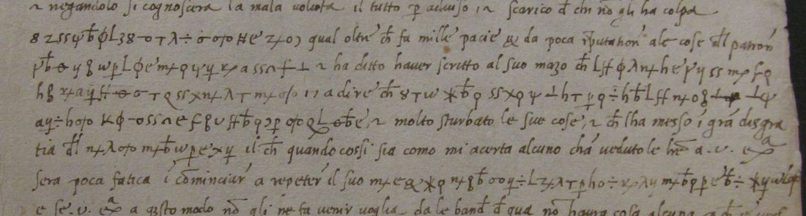

At a glanceKey from external plaintext · partial (12% of the cipher)
- The letters
- Giuliano Caprile, canon of Eger and secretary of Cardinal Ippolito d’Este, to the ducal secretary Bonaventura Pistofilo and to Duke Alfonso I, March 1520 to April 1521: five texts in one cipher.
- Where
- Archivio di Stato di Modena, Ambasciatori, Ungheria b. 4; DECODE R1136, R1138, R1139 (catalogue item 157), and the Hungarian database Vestigia, where the letters of 16 and 25 February 1521 (Vestigia 1920, 1921) are not on DECODE.
- The cipher
- A homophonic cipher of invented signs with no word division, crossed ligatures for s and q.
- How it was deciphered
- One postscript of 16 February 1521, in both its versions, was deciphered by Judit W. Somogyi in 2025. Her two printed texts, aligned against a transcription of the signs, gave the key. On 2 October 2026 the letter of 25 February 1521 added five values, and second transcriptions of R1139 and R1136 at full resolution were deciphered with them.
- What it says
- Ippolito’s estate at Eger after he left Hungary: the custode, the governor, the see, money and debts. On 25 February 1521 Caprile reports that il custode è stato quel ch’à persuaso others to say Eger had been given away before the new bishop came, and advises the Duke to reclaim what is due sopra soi beni.
- Measured
- V1921: 161 of 166 cipher signs give sense (97.0%), 147 at grade C. R1139: 453 of 505 decoded letters inside deciphered phrases (89.7%, 3 October 2026). R1136: 378 of 565 (66.9%). These are shares of decoded letters inside phrases: R1139 and R1136 still have holes in most lines, so they are decoded, not read (reading audit, 22 October 2026).
- Still open
- Stretches of R1139 and a third of R1136, limited by doubtful sign separations.
- Other ciphers
- Caprile’s 1519 letters use a different two-tier cipher, with its own page; Alfonso Cistarelli’s numerical cipher of July 1520, in the same box, also has its own page.

01 The records
| DECODE | ASMo b. 4 | Vestigia | Date | What was found |
|---|---|---|---|---|
| R1136 | 1519–20 no. 11 | 1876 | 8 Mar 1520 | Twelve lines in the sign cipher, no decipherment. Decoded here, not read (66.9% of letters inside phrases). |
| R1138 | 1520–21 no. 10 | 1919 | 16 Feb 1521 | Postscript on a slip. Deciphered by W. Somogyi (2025). |
| — | 1520–21 no. 11 p. 3 | 1920 | 16 Feb 1521 | Second version of the same postscript; not on DECODE. Deciphered by W. Somogyi (2025). |
| — | 1520–21 no. 12 | 1921 | 25 Feb 1521 | Six cipher runs inside clear sentences; not on DECODE. Deciphered here, 161 of 166 signs. |
| R1139 | 1520–21 no. 13 | 1922 | 6 Apr 1521 | Nine lines of the sign cipher on a slip. Decoded here, not read (89.7% of letters inside phrases). |
The Vestigia records flagged as cipher in the 1519–21 files are these five, Caprile’s 1519 letters and Cistarelli’s: no other letter uses the 1520–21 key. Caprile’s 1519 letters are in a different, two-tier cipher, most of them deciphered in 1882; the one left without a decipherment, R1128, is on its own page.
02 The key
The cipher is a run of invented signs with no word division: φ, ψ, λ, ÷, ss, ff, a crossed b, m and n with a cross, an inverted T, and some forty more. There are 49 labels in all, over 2,278 signs in five texts, transcribed from the DECODE and Vestigia images. Somogyi calls it homophonic, and it is. The key was built in two steps:
- A ciphertext-only solver run (simulated annealing) over all five texts, scored with a sixteenth-century Italian n-gram model. It gave a rough key in which scritti, regno, signore and Ungaria could already be recognised.
- That key seeded a monotone alignment (Viterbi with gaps, re-estimated until stable) of the transcription against Somogyi’s two texts. 714 letters align, and 90% of alignments agree with the majority value of their sign.
The values:
a = q, T, ⊥ · c = φ, θ · d = ψ, r · e = y, ss · g = w, u · i = ƀ, ɔ, L · l = ff, n · m = z, Ħ · n = ÷, p · o = ɛ, the stacked q/b, oσo · p = & and its looped variant · r = *, x · s = m+, n+ · t = h, f · u = λ, a
The letter of 25 February 1521 corrected and extended these values (2 October 2026). The lone o, taken at first for a null, is a homophone for h and u (“ha”, “ch’à”, “qui”, “suo”), as the alignment counts had already shown; two lone o together are b (“beni”, and R1139’s “debito”); z and x with a cross, and x with the looped p, are q (“qui”, “quel”, “quantunque”); the looped p doubles for f (“oficio”); and K is et once. The second transcriptions of R1139 and R1136 added o with a cross = s, the crossed 3 and 3 with the looped p = q, the triangle = b or x, plain c = o, and o with a lead-in = h. The figure 8 is a null in one place.
A statistical check on the letter of 25 February (161 tokens, 42 sign types) scores the reading well above random keys (z 6.6), but a key annealed onto the shuffled ciphertext reaches the same score, so the test alone cannot confirm the key on so short a text: verdict underdetermined. The key’s support is the alignment with Somogyi’s two texts and the sense of the three letters it deciphers.
03 The letter of 25 February 1521 (Vestigia 1921)
Caprile to Duke Alfonso I from Esztergom, 25 February 1521 (Caprili 1520–21 no. 12). It is not on DECODE; Vestigia has it as item 1921, flagged as containing cipher. The letter is in clear until its last third, where six cipher runs are set inside clear sentences. They were transcribed sign by sign on the Vestigia image, with four corrections to the first transcription, and deciphered with the key on 2 October 2026.

161 of the 166 cipher signs give sense (97.0%); 147 of them (88.6%) at grade C, with every sign at its key value. On a sixteenth-century Italian model the reading scores −1.79 per character, against −4.12 for the same letters shuffled. Clear text in roman, the deciphered runs in bold:
… il tutto per adviso e scarico di chi ne ha colpa. E me dicixe [= disse?] ha un omo qui qual oltra che fa mille pacie & da poca riputation ale cose del patron, dice ogni cosa e revelta [?], e ha ditto haver scritto al suo mazo che il custode è stato quel ch'à persuaso [..] a dire che [.] Agria era data d'anti il suo advento, e[t] che lo toglia in oficio, e molto sturbato le sue cose, e chi l'ha messo in gran disgratia di suo signore; il che quando cossi sia, como mi acerta alcuno ch'à veduto le lettere, a V. Ex.a sera poca fatica i cominciar a repeter il suo sopra soi beni, quantunque siano in reg[no?]. E S. V. Ex.a a questo modo …
“And he told me there is a man here who, besides committing a thousand follies and bringing little credit to the master’s affairs, tells everything and [gives it away]; and he has said he wrote to his [messenger] that it was the custode who persuaded [them] to say that Eger had been given away before his arrival, and that he should take him into office … and put him in great disgrace with his lord. If that is so, as someone who has seen the letters assures me, it will be little trouble for Your Excellency to begin reclaiming what is his from his goods, even though they are in the kingdom.” The patron and the claim are Ippolito d’Este’s Eger bishopric, the subject of R1136, R1138 and R1139. Dicixe (for disse?) and revelta are grade M. Open: two minim strokes after persuaso with no key value, one sign before Agria (probably a slip), and two signs at the torn edge after in reg.
04 R1139, 6 April 1521 (decoded, not read)
A slip pasted into the letter of 6 April. Nine lines of cipher, then the clear text “Expettamo sino a S. Georgio…”. It is the estate business of Somogyi’s article: the keeper (custode) and the governor of Eger, the money of the late bishop’s debt, and someone who says he wants to go to Italy.
Six passes since September 2026 have worked on it: the signs re-checked on the image wherever the decrypt did not read (three transcription errors found, among them the tall-stem r of custode), letters proposed from the key’s sign counts with an Italian model, a second transcription from the DECODE image at full resolution, the values from the letter of 25 February, a table of look-alike sign pairs over all five texts, and a study of pen shapes. After them 453 of the 505 decoded letters fell inside phrases (89.7%, 3 October 2026). The reading audit of 22 October 2026 asked whether the slip builds sentences: it does not, and it is decoded, not read. On 22–23 October the cipher was re-read on strips of the native image at 2.2 times, five sign labels were corrected, and every token was decoded again with the key; no new value holds across every occurrence (4 = e, 1 = v, 1 7 = ve were tested and rejected). The partial reading, aligned word by word with the signs (R1139_reading.md; two of its eleven sentences are clean):
Post. Il custode, quando a Buda, com[?e] i' scrisi, et è tornato gubernator de [4817]. […] decime, et fa ogni cosa per […] io [17] […]; a si tenuto Agria in oficio. [?E] credo dia ogni [?ato] e qualche cosa a le ma […] custode; per anchora si n'è intrato [?ci] in castelo. Et cosi la venuta sua in Italia, [?a] de che vi scrivi, qua[…] li teneva per ferma, è andata in [?vero]. Il che vedendo io, bel belo li go fato moto deli danari del suo debito, come mi dise meser [?a] Alfonso. Lui m'ha resposto, dice [?te] voler andar in Italia quando al dare te […]. […] Milan […] andiate. Parlaremo a longo sopra ciò, et se i bisionran danari in [?presto], per andar ve ne darò. Vedrò quel mi darà, [?e] il tut[o] reportarò a V. Ex.
“Postscript. The custode, when [he was] at Buda, as I wrote, has also come back as governor of [4817]. […] tithes, and he does everything for […]; [he] has thus held Eger in office. [?And] I believe he gives every [?act] and something into the hands […] custode; as yet he has not entered [?there] into the castle. … Seeing this, I gently raised with him the money of his debt, as messer [?a] Alfonso told me. He answered me, saying he wants to go to Italy … We shall talk at length about it, and if they need money on [?loan], I will give you some for the journey. I shall see what he gives me, [?and] I shall report the whole to Your Excellency.” Go is the Venetian-Ferrarese gh’ò (I have); fato moto is fatto motto (mentioned). The groups 4817 and 17 look like figures or code signs and have no key value.
05 R1136, 8 March 1520 (decoded, not read)
Twelve lines after a clear opening (“e la susseguente matina”), written the day after Ippolito crossed out of Hungary for the last time (7 March 1520). A second transcription at full resolution (2 October 2026) put 378 of the 565 decoded letters inside phrases (66.9%), but the lines do not build sentences. The 22–23 October re-read confirmed the sign labels at twice the size on contrast-stretched strips; the breaks turn on signs the key cannot separate or value, and a stain covers about six signs at the left of lines 1–3. The partial reading (R1136_reading.md; none of its nine sentences is clean):
[?Asi] transferse a Buda il custode […]. […] [?altro] li a in oficio questo episcopato, et a epso custode […]. […] gu[…]ernator […] Lactantio, ho inteso, qual […] a in gran presia […]amato a Buda, et dicono eser conclusi […] congregati […] Bachiensis, che ogni episcopa[…] […] il man[…] […] cosi [17] ne tenir […]. […] et l'altro in titulo, [?ma] questo modo excluderà […]. […] li daran poco […] vo[…]stra Excelentia, quel si […] potrà far al custode par questa via de Ungaria sopra il su[…] […]. […] secondo patrone, […] in questo loco niente […]. […] tornato el sia […] canto, e vedrò intendere il […] pensier suo […] sopra tal debito.
The custode moves to Buda; the see of Eger, its custode and governor, Lactantio, the prelates gathered (Bachiensis is the archbishop of Kalocsa-Bács), and the advice that the Duke “potrà far al custode par questa via de Ungaria” on his goods, the claim Caprile repeats a year later on 25 February 1521.
06 What stays open
- R1139 and R1136, decoded, not read. After second transcriptions at full resolution, two more passes on 3 October 2026 and the re-read of 22–23 October, 10% of R1139’s decoded letters and 33% of R1136’s fall outside phrases, and neither builds sentences. In R1139 these are the figure-like groups
4 8 1 7and1 7and short stretches of lines 2, 4–5 and 8; in R1136, a stain over about six signs at lines 1–2 and the stretches limited by doubtful sign separations. A table of the look-alike sign pairs over all five texts (pass 5) settled only two of them (CE= o, crossedxp= q), and added mi per Milan in R1139 line 8; a study of the pen shapes (pass 6) found no shape class with a consistent value.4 8 1 7and1 7fit neither as letters nor as numerals, and are probably nomenclator codes with no list. - V1921. Five of 166 signs stay open (no key value, a slip, the torn edge); dicixe and revelta are grade M.
- What would finish it. Hand-placed crops of every occurrence of the doubtful sign pairs, or more text in the same key. No further letter in this cipher exists in the file.
Full texts
The transcription and the decryption of every document on this page, so that the reading can be used and checked. Short files are shown here; all are in the repository.
R1139, slip of 6 Apr 1521 decoded, not read
Postscript slip from Giuliano Caprile to Ferrara about the custode (castellan) of Eger, the governor's return, money of the late bishop's estate, and someone's wish to go to Italy: the Ippolito d'Este estate business of Somogyi's article. About 90 % of decoded letters fall inside read phrases; two numeral-like groups are open.
A mechanical decode with holes in most sentences: shown so that the transcription and the key can be checked and improved, not as a reading.
Transcription
# Caprile 1521 graphic-sign cipher, transcription (labels defined in seg21/signs.md) # ? = doubtful sign, # = illegible. [clear: ...] = clear text. No decryption. # R1139 = IMG_R1139_I5752_P2.png (6 Apr 1521), slip, crops seg21/R1139_Lnn_k.png R1139 L01: [clear: post] L ff 8 PHI LAM n t f o SL o PSI y Z t T DIV PSI? 8 UT o o a PSI q TH c z 4 o B m t PHI x RC n t L K ss h o SL o AST p q f CE w a o o y x DIV T h CE AST PSI ss 4 8 1 7 R1139 L02: c UT LOOP? B QB q PSI y TH RC HH ss K f UT o SL o w DIV L PHI QB m t q AMP y x y? B QB o SL o 1 7 x? p o T n o UT n t RC f y DIV LAM h e q w AST L q L p QB AMP? RC TH b o SL o 4 R1139 L03: c PHI XB y r CE PSI B T o SL o U p B q K CE 8 Z CE LAM q HH PHI o ss TH CE n t q T n 12 HH q PSI RC QB PHI LAM m t f o SL o p ss AMP y AST q DIV PHI o QB? x q t? B DIV y B p R1139 L04: h x T f o SL o PHI RC DIV TH UT m t h y A o SL o Z K PHI o SL o n t L ff T LAM y DIV o h UT n t LAM p B DIV RC f T n B q q? r y PHI o y LAM B m t PHI x RC o SL L x LAM q # R1139 L05: ff o B h y DIV y a q CE ss AST f y x HH T y UT PHI PSI q f T B p 1 ss x o SL o L ff PHI o y LAM y r ss p PSI QB B CE o o ss n B? y A CE ff L w o SL o f q R1139 L06: QB QB HH CE h o SL o PSI y ff L r UT DIV T x B PSI ss ff m t a o SL o r y o o L h QB TH CE z y HH B PSI RC o t ss z y n t ss AST 8 q? q ff AMP o o SL o DIV m? QB R1139 L07: ff LAM B z UT AST ss n t AMP CE m t h o SL o PSI L TH y f ss a CE ff y x q DIV PSI T AST B p RC h q n L UT x o a q DIV r CE UT ff PSI q x y f ss q? PHI o # R1139 L08: z B a y AST HH B n T R L q p PSI B T f ss EL q x ff T AST ss z o SL o UT ff QB DIV w o CE m t CE AMP x q PHI RC o SL o K m t ss o RC o o B n t B CE DIV R1139 L09: AST T DIV PSI UT p q x RC B DIV CE AST y n t f CE AMP y x T DIV r q AST a y p ss r q x o SL o LAM y r AST o SL o x p o y ff z B PSI L x T c B ff h LAM QB x y EL o SL o R1139 L10: f q x CE UT a CE Z? [clear: Expettamo sino a S. Georgio ... (rest of slip in clear)] # R1138 = IMG_R1138_I5748_P3.png (16 Feb 1521), slip, crops seg21/R1138_Lnn_k.png R1138 L01: [clear: Se V. Ex.a sa cosa (?) ...] p q HH x y U DIV o SL o n B m t QB L z t LAM? UT x q DIV h DIV? z RC HH B q K n L o SL o QB CE HH B HH RC q UT 12 [clear: a li altri] R1138 L02: [clear: credite de chi si hanno e semiti (?)] 8 4 o o RC m t QB U p q TH o y n t RC f q PHI L q ss CE PSI y z r B y h ss n t f UT HH y DIV h RC PHI CE y? PSI B h L R1138 L03: LAM p TH o SL o r RC PHI L A o SL o p y HH x o LAM q n m t B TH CE DIV h y p w UT TH o y ff m t L w DIV QB x y ff ss U T q 12 EL y x ff o SL o B n t y x LAM q DIV R1138 L04: f RC T o y x m t n a B K TH CE DIV m t o y h LAM PSI B p ss r y n AST y w DIV o SL o q PHI B CE RC ff c? h ss n t h UT HH y p QB m t a CE n t RC T LAM q ff B PSI QB R1138 L05: a p z B a y o SL o r o 8 K? L ff RC q [clear: p(er)ch(e) questoro dico] Z q PHI o y ss o SL o x p LAM o SL o r p QB DIV ff y w T o t ss h PHI o y e z DIV L q y o t ss DIV h R1138 L06: r y LAM QB n a f q UT 12 m a Z LAM q DIV PSI o SL o n L r B o t RC x a T p f o SL o [clear: Scrivo a V. Ex.a li sta duna ma sul nostro] R1138 L07: ff? L m t TH x q? QB TH? CE RC QB AMP o SL o x h UT y AST CE QB HH q DIV PSI T x CE q y t LAM L q m t ss PHI o AST q 4 [clear: (below) p(er) Salva Cavalcata mandai questa ...] # V1920 = img/v/v1920_3.jpg (letter dated 16 Feb 1521 on the label), cipher postscript block, crops seg21/V1920_Lnn_k.png (lower resolution; more ?) V1920 L01: [clear: Post.a S. V. Ex.a] 4? f q PHI o SL o p h CE x y AMP ss f y AST ss ff B m t QB RC z t LAM q x UT p h q z L ff RC T q n AST y w DIV CE K V1920 L02: ff RC o SL o PHI f QB HH B n L UT q 12 K ff B T n h x L PSI y PHI o y t m t ss o T R CE y n t TH AST RC o t B D RC m t o SL o w DIV q PHI o y n t L f V1920 L03: TH B q ss QB r ss z PSI L y h y n t f UT HH ss DIV h RC c y LAM p PHI o o r L TH B A CE p y n x p o q ff n t RC PHI o SL o DIV f y p U q TH o y n m t B w DIV QB x # V1920 L04: n y w UT T 12 EL y AST ff o SL o o o n t y x LAM q p f RC c UT U ff RC o T c PHI CE p n t o y h LAM PSI p ss r y HH x ss U DIV QB UT TH B o SL o L ff f y m t h q V1920 L05: z ss DIV h CE n t B q A? T n L r QB LAM DIV z L A y CE PSI a T r y PSI LAM PHI UT h B AMP ss x TH o y z t LAM y n t f QB AST PSI B TH ss q DIV o p PHI o y # V1920 L06: y o SL o x o LAM QB PSI p CE DIV ff y w q o t ss f o p HH DIV L T ss AST q p h r y a CE ff LAM h p UT 12 HH T x o q DIV r o SL o n B PSI RC o t L x a T DIV V1920 L07: f CE m t PHI x B LAM o SL o q o o SL o n t B h t? q [clear: Ex.a?] 8 Z q t? ff RC PSI y QB B r LAM DIV q z T p QB n t a ff o CE ff f CE n L n t PHI x B QB L 8 V1920 L08: TH o ss RC o SL o o QB z q DIV PSI T AST o SL o CE EL CE x h q AST QB EL y x a RC q m t ss PHI o x q L r # V1921 = img/v/v1921_2.jpg (25 Feb 1521, Strigonio), cipher runs inside clear text, crops seg21/V1921_Lnn_k.png V1921 L01: 8 z ss PSI B PHI L Z 8 o T LAM DIV o SL o HH CE z t o RC [clear: qual oltra che fa mille pacie & da poca riputation ale cose del patron] V1921 L02: r B TH y QB w p L PHI CE m t q y y x a ss n f UT [clear: e ha ditto haver scritto al suo mazo che] L ff PHI LAM n t h CE r y ss m p f q V1921 L03: h QB x t a y ff TH o T EL ss x n t LAM T m t o SL o 1? 1? [clear: a dire che] QB T w AST B q ss x q PSI UT h T r q DIV h B L ff n t o QB [struck-out: UT q] UT PSI V1921 L04: a y DIV h o SL o K PHI o ss n e f QB U HH B q RC p o SL o EL L TH B CE [clear: , e molto sturbato le sue cose, e chi l'ha messo in gran disgratia di] V1921 L05: [clear: tia di] n t LAM o SL o m t B w p CE x y [clear: il che quando cossi sia como mi acerta alcuno cha veduto le lettere a V. Ex.a] V1921 L06: [clear: sera poca fatica i cominciar a repeter il suo] m t CE AMP AST q n t QB B o o y DIV L z t LAM T p h o DIV x p LAM y m t B q p CE B DIV AST y w K? PHI [clear: (next line) e S. V. Ex.a a questo modo ...] # R1136 = IMG_R1136_I5740_P1.png (8 Mar 1520), cipher block lines 2-13 of the letter, crops seg21/R1136_Lnn_k.png. IMG_R1136_I5741_P2.png checked at overview scale: all clear text, no cipher found. R1136 L01: [clear: e la susseguente matina] QB T n t B h x q DIV m t f y AST n t y ss T o o LAM PSI q RC ff PHI o n t f o SL o r y TH? o? L? z T h CE Z? R1136 L02: PHI q 1 T LAM? # # n h RC CE ff L T B p QB EL B TH RC CE z t LAM y m t f o SL o y AMP RC n t PHI CE EL UT h o SL o K f q y EL m t QB TH LAM n t h CE r PHI y y R1136 L03: QB U o ss? # x DIV q f o SL o AST ff TH o SL o HH ss z t PHI PSI T ff B p c n q TH h T DIV f RC o SL o o c B DIV h y m t CE x p LAM T ff TH a z n # y R1136 L04: x y e ss 12 ff o T RC DIV w AST UT p AMP x y o t L q o o o RC T HH q h o SL o UT D o PSI t K PSI RC TH CE DIV QB y o t ss x PHI o SL o DIV TH n LAM n t B R1136 L05: 4 p y HH B T AST? n B PHI CE n RC c U RC PHI o SL o p w x ss U? K m t o SL o f QB n f QB QB B n t QB q D T PHI o RC y DIV m t L n t o TH y CE w DIV B y EL B n t CE AMP q R1136 L06: QB h o SL o LAM T TH q f o x QB n t h RC c h T h x ss UT K RC L ff z T DIV o o PHI y ff 12 K PHI o SL o o t L 1 7 p ss f y DIV L x q PHI? PSI LAM RC R1136 L07: o DIV CE UT p CE EL B o o L QB t ff T n f x o SL o RC DIV h B f o ff o SL o K q x o o y n t h QB z CE PSI QB y D TH ff o r ss AST q AMP? QB HH y R1136 L08: HH PSI B TH L CE ff B PSI T x q DIV AMP? o SL o TH QB t AMP y DIV n t RC z o SL o LAM QB p? n t h x q y D TH y A y DIV h L T y LAM y ff m t B R1136 L09: AMP QB f AST T f UT x T ff PHI? a n t f o SL o PHI? ss EL HH? AST z t o ss n t f q LAM B T r y o LAM DIV w T AST B T n t CE EL x q L ff m t a o RC R1136 L10: r y o o L o QB 4 AST ss n t B q DIV PSI QB n o B m t y PHI? QB DIV r CE AMP q B x QB p ss q Z B DIV x o a ss m t f o p n CE TH QB p B y DIV h ss y R1136 L11: r? PHI? CE L z y p o SL o f CE x p q f QB ss ff n t B T n L ff T AST CE LAM p TH T DIV h QB K? LAM y r x CE RC DIV f ss p PSI y x y RC ff QB R1136 L12: 4 Z AMP ss DIV m t B ss AST n t LAM o SL o p m t LAM EL AST T f UT ff PSI y D B f QB # TOTAL signs (excluding [clear]/[struck] spans; # counted): 2278 # distinct labels: 50 # frequency by label (doubtful ? folded into base label): # o 247 10.8% # y 136 6.0% # t 120 5.3% # q 108 4.7% # B 91 4.0% # n 85 3.7% # DIV 78 3.4% # x 78 3.4% # CE 73 3.2% # SL 70 3.1% # QB 70 3.1% # T 69 3.0% # ss 68 3.0% # p 64 2.8% # L 60 2.6% # h 60 2.6% # RC 59 2.6% # ff 58 2.5% # f 57 2.5% # PHI 55 2.4% # LAM 55 2.4% # PSI 48 2.1% # m 45 2.0% # TH 41 1.8% # AST 40 1.8% # UT 39 1.7% # r 36 1.6% # z 32 1.4% # a 28 1.2% # HH 28 1.2% # w 22 1.0% # AMP 20 0.9% # K 19 0.8% # EL 16 0.7% # c 12 0.5% # 8 11 0.5% # Z 11 0.5% # U 11 0.5% # 4 9 0.4% # 12 9 0.4% # # 8 0.4% # 1 7 0.3% # A 7 0.3% # D 6 0.3% # e 4 0.2% # 7 3 0.1% # R 2 0.1% # LOOP 1 0.0% # b 1 0.0% # XB 1 0.0%
Transcription
# R1139 pass 4 (2 Oct 2026): caprile1521_transcription.txt lines re-checked on IMG_R1139_I5752_P2.png at native # resolution (region x 900-2940, y 2080-2800, 2.2x strips). Changed lines marked *. New: Z+ (crossed 3) in L01 'quando', # Zp (3 + looped p, = q) in L03 'qual', xp in L09 'quel'; L01 ϒ (tall-stem r = d) for PSI?, 8 = QB; L03 'φ σ ss' = che. R1139 L01*: [clear: post] L ff 8 PHI LAM n t f o SL o PSI y Z+ T DIV r QB UT o o a PSI q TH CE z 4 o B m t PHI x RC n t L K ss h o SL o AST p q f CE w a o o y x DIV T h CE AST PSI ss 4 8 1 7 R1139 L02: c UT LOOP? B QB q PSI y TH RC HH ss K f UT o SL o w DIV L PHI QB m t q AMP y x y? B QB o SL o 1 7 x? p o T n o UT n t RC f y DIV LAM h e q w AST L q L p QB AMP? RC TH b o SL o 4 R1139 L03*: c PHI XB y r CE PSI B T o SL o U p B q K CE QB Zp LAM q ff PHI o ss TH CE n t q T n 12 HH q PSI RC QB PHI LAM m t f o SL o r ss AMP y AST q DIV PHI o QB x q # B DIV y B p R1139 L04: h x T f o SL o PHI RC DIV TH UT m t h y A o SL o Z K PHI o SL o n t L ff T LAM y DIV o h UT n t LAM p B DIV RC f T n B q q? r y PHI o y LAM B m t PHI x RC o SL L x LAM q # R1139 L05: ff o B h y DIV y a q CE ss AST f y x HH T y UT PHI PSI q f T B p 1 ss x o SL o L ff PHI o y LAM y r ss p PSI QB B CE o o ss n B? y A CE ff L w o SL o f q R1139 L06: QB QB HH CE h o SL o PSI y ff L r UT DIV T x B PSI ss ff m t a o SL o r y o o L h QB TH CE z y HH B PSI RC o t ss z y n t ss AST 8 q? q ff AMP o o SL o DIV m? QB R1139 L07: ff LAM B z UT AST ss n t AMP CE m t h o SL o PSI L TH y f ss a CE ff y x q DIV PSI T AST B p RC h q n L UT x o a q DIV r CE UT ff PSI q x y f ss q? PHI o # R1139 L08: z B a y AST HH B n T R L q p PSI B T f ss EL q x ff T AST ss z o SL o UT ff QB DIV w o CE m t CE AMP x q PHI RC o SL o K m t ss o RC o o B n t B CE DIV R1139 L09*: AST T DIV PSI UT p q x RC B DIV CE AST y n t f CE AMP y x T DIV r q AST a y p ss r q x o SL o LAM y r AST o SL o xp o y ff z B PSI UT x T c B ff h LAM QB x y EL o SL o R1139 L10: f q x CE UT a CE Z? [clear: Expettamo sino a S. Georgio ... (rest of slip in clear)]
Transcription
# R1139 b18 re-read (22-23 Oct 2026): r1139_pass4.txt with the labels corrected on IMG_R1139_I5752_P2.png at native # resolution (quarter-line strips at 2.2x); every change is in R1139_corrections.tsv. New labels: p+ (crossed p, one # occurrence, = s in 'si n'e'), q+ (q with a stroke through the descender, value open), '1 1' (two minims). R1139 L01: [clear: post] L ff 8 PHI LAM n t f o SL o PSI y Z+ T DIV r QB UT o o a PSI q TH CE z 4 o B m t PHI x RC n t L K ss h o SL o AST p q f CE w a o o y x DIV T h CE AST PSI ss 4 8 1 7 R1139 L02: c UT LOOP? B QB q PSI y TH RC HH ss K f UT o SL o w DIV L PHI QB m t q AMP y x y? B QB o SL o 1 7 x? p o T n o UT n t RC f y DIV LAM h e q w AST L q L p QB AMP? RC TH b o SL o 4 R1139 L03: c PHI XB y r CE PSI B T o SL o U p B q K CE QB Zp LAM q ff PHI o ss TH CE n t q T n 12 HH q PSI RC QB PHI LAM m t f o SL o r ss AMP y AST q DIV PHI o QB x q p+ B DIV y B p R1139 L04: h x T f o SL o PHI RC DIV TH UT m t h y A o SL o Z K PHI o SL o n t L ff T LAM y DIV o h UT n t LAM p B DIV RC f T n B q q+ r y PHI o y LAM B m t PHI x RC o SL L x LAM q # R1139 L05: ff o B h y DIV y a q EL ss AST f y x HH T y UT PHI PSI q f T B p 1 ss x o SL o L ff PHI o y LAM y r ss p PSI QB B CE o o ss n D y A CE ff L w o SL o f q R1139 L06: QB QB HH CE h o SL o PSI y ff L r UT DIV T x B PSI ss ff m t a o SL o r y o o L h QB TH CE z y HH B PSI RC o t ss z y n t ss AST 8 q? q ff AMP o o SL o DIV m? QB R1139 L07: ff LAM B z UT AST ss n t AMP CE m t h o SL o PSI L TH y f ss a CE ff y x q DIV PSI T AST B p RC h q n L UT x o a q DIV r CE UT ff PSI q x y f ss q+ PHI o 1 1 R1139 L08: z B a y AST HH B n T R L q p PSI B T f ss EL q x ff T AST ss z o SL o UT ff QB DIV w o CE m t CE AMP x q PHI RC o SL o K m t ss o RC o o B n t B CE DIV R1139 L09: AST T DIV PSI UT p q x RC B DIV CE AST y n t f CE AMP y x T DIV r q AST a y p ss r q x o SL o LAM y r AST o SL o xp o y ff z B PSI UT x T c B ff h LAM QB x y EL o SL o R1139 L10: f q x CE UT a CE Z? [clear: Expettamo sino a S. Georgio ... (rest of slip in clear)]
Decryption
# R1139 and R1136: pass 3 with the V1921 values (2 Oct 2026)
New values (from V1921, `read_v1921.md`): lone o = h or u (not a null), oo = b, z+ = q, x+ = q, x followed by the
looped p = q (xp ligature, R1136 L10 "questo", V1921 "quantunque"), EL/AMP = f beside p, K = et (M), plain c = o (M,
R1136 L03 "inteso"). Proposals from `beam21.py` (key21_counts priors + these values, it-cinquecento order 5, no spaces;
output `beam21_out.txt`); each phrase was checked on the crops `seg21/<SRC>_Lnn_k.png`. Shares from `regrade21.py`:
letters inside the claimed phrases over all letters the line decodes to (nulls excluded).
**R1139: 83.8 % of decoded letters inside claimed phrases (424/506). R1136: 59.4 % (340/572).** Most phrases are
grade M (one or two signs off the key majority or supplied); grade C is marked.
Grades: C = key values throughout; M = one or two signs read against the key or supplied; [..] unread.
## R1139, slip of 6 Apr 1521 (1520-21 no. 13)
| line | reading | grade |
|---|---|---|
| L01 | [Post.] il custode [..]ande a Buda, come io scrisi, è tornato gubernator de[..] | C/M |
| L02 | [..] ogni cosa, per[ché] io [..] si è tenuto Agria in o[f]icio | M |
| L03 | [..] credo [..] ogni [..] qualche cosa a le ma[n] di[l] custo[d]e; per ancora si n'è in- | M |
| L04 | -trato [..] in castelo, et cosi la venuta sua in Italia [..] che vi scrivi, qual | C/M |
| L05 | li teneva per ferma e andata in vero; il che vedendo io, [..] li go fato | C/M |
| L06 | moto deli danari del suo debito, come mi dise messer Alfonso. | C (debito now C: oo = b) |
| L07 | Lui m'ha resposto, dice te voler andar in Italia quando al dare [..] | C |
| L08 | [..] Milan [..] andiate; parlaremo a longo sopra ciò [..] | C/M |
| L09 | [..] danari in [p]resto per andar[..] [..] vedrò quel mi dirà, e il tuo repo- | M |
| L10 | -rtarò a V. Ex. | M |
Changes from pass 2 (`r1139_pass2.txt`): "de[b]ito" is now debito at key values (o o = b); "gubernator" and "messer
Alfonso" read with the lone o as u/null; L02 "Agria in o[f]icio" (EL = f) as in V1921 L04; L04 "che vi scrivi". L01
"[..]ande a Buda" and L03 stay phrase-level: the beam proposes off-key letters there (6 in L01, 3 in L03) that the
signs do not support.
## R1136, 8 Mar 1520 (1519-20 no. 11)
| line | reading | grade |
|---|---|---|
| L01 | [clear: e la susseguente matina] [..]asi transferse a Buda il custode [..] | C (transferse a Buda il custode) |
| L02 | [..] in oficio questo episcopato, et a epso custode [..] | C (questo episcopato: z+ = q; et = K; epso as in V1921's clear text) |
| L03 | [..] governator, [..] Lactantio [..] inteso, qual [..] | M |
| L04 | [..] in gran pre[s]ia [..] dicono esser conclusi | M / C |
| L05 | [..] congreg[..] ogni episcopa- | M |
| L06 | [..] il manco [..] cosi [..] tenir [..] | M |
| L07 | [..] l'altro [..] questo modo [..] | M |
| L08 | [..] li darà [..] poco spensi[eri] [..] vostra Excelentia [..] | M |
| L09 | potrà far al custo[d]e per questa via de Ungaria sopra il suo [..] | C/M (questa: z+ o = qu) |
| L10 | debi[to] [..] secondo [..] patrone [..] in questo loco niente [..] | M (questo: xp = q) |
| L11 | [..] tornato el sia [..] e vedrò intendere il [..] | M |
| L12 | [..] spensier suo [..] tal debito | C/M |
Gist: the morning after [Ippolito's departure], the custode moved to Buda; the see of Eger, its custode and
governor, Lactantio, what has been concluded; Caprile tells the Duke he can act "al custode per questa via de
Ungaria sopra il suo" — the same claim on the custode's goods as in V1921 a year later.
## What is still open and why
The unread stretches are not an outside blocker. The images are legible; what stops a full reading is the single
transcription (several signs in R1136 L03, L05-L08 were read differently on the crops than in
`caprile1521_transcription.txt`, e.g. L05 "U? K m t o SL o f QB n f QB QB" looks like "u q f 8 ƀ 8 ƀ") and the
doubtful separations listed in `seg21/signs.md` (c/CE/e, QB/8, AMP/EL, crossed/plain y). Next step: a full
second transcription of R1136 line by line on the original image at full resolution (not the bilevel crops), then
`beam21.py` again.
# Pass 4 (2 Oct 2026, later): second transcription of R1136, second look at R1139's unread stretches
Both letters re-read from the original images at native resolution (not the bilevel crops): R1136
`IMG_R1136_I5740_P1.png` x 880-2920, y 900-1860; R1139 `IMG_R1139_I5752_P2.png` x 900-2940, y 2080-2800; strips at
2.2x. New transcriptions `r1136_pass4.txt` (11 of 12 lines changed) and `r1139_pass4.txt` (L01, L03, L09 changed);
`beam21.py` outputs `beam21_r1136_pass4.txt`, `beam21_r1139_pass4.txt`; shares from `regrade21.py`.
New sign values: o+ (lone o with a cross) = s ("presia", "esser"); Z+ (crossed 3) = q ("quando"); Zp (3 + looped p)
= q ("qual"), like xp; D/Δ = b ("Bachiensis") or x ("Excelentia", "excluderà"); plain c = o ("ho inteso"); σ (o with
lead-in) = h ("che", "anchora").
**R1136: 66.9 % of decoded letters inside claimed phrases (378/565), up from 59.4 %. R1139: 88.7 % (448/505), up
from 83.8 %.**
R1136 new phrases: L03 "[..]o guernator [..] Lactantio, ho inteso, qual [..]"; L05 "congregati [..] Bachiensis
[Kalocsa-Bács], che ogni episcopa-"; L07 "l'altro in titolo, et a questo modo excluderà [..]"; L08 "li daran poco
[..] vostra Excelentia, quel si-". R1139 new: L01 "il custode, quando a Buda, come i' scrisi, è tornato gubernator
de [4 8 1 7]"; L02 "[..] decime, et fa ogni cosa per[..] [1 7] [..] si è tenuto Agria in oficio"; L03 "credo dia
ogni ato e qualche cosa a le ma[n] di [l]o custode; per anchora si n'è in-"; L09 "[..] danari in [p]resto, per andar
ve ne darò; vedrò quel mi darà, e il tuto [re]portarò a V. Ex."
What is still open: R1139 L01 end "4 8 1 7" and L02 "1 7" look like numerals or code signs (no key value); L02
start, L04-L05 and L08 small stretches. R1136 L01 end, L02 start (stain), L06, L10 start and L11 start do not yet read;
the doubtful sign separations (c/CE/e, QB/8, AMP/EL, x/xp) are the limit, not the image.
# Pass 5 (3 Oct 2026): look-alike signs, numerals, cribs
**Look-alike pairs** (`lookalike21.py`, `lookalike21.json`): every occurrence in R1136, R1139, V1920, R1138 and V1921
given the union of the pair's values, the it-cinquecento beam choosing per occurrence:
| signs | occurrences | LM choices | verdict |
|---|---|---|---|
| CE | 72 | o 55, e 12, c 4 | CE = o, confirmed (Somogyi EM o 23/23) |
| c | 12 | o 5, e 4, c 3 | no consistent value; c = o only where context forces it (M) |
| e | 4 | e 2, o 2 | too few |
| QB | 71 | o 38, e 14, t 12, d 7 | QB = o mostly, t/e/d minorities (Somogyi EM o 20, t 4) |
| 8 | 9 | o 3, t 3, e 2, d 1 | not separable from QB by the LM; Somogyi EM e 2 |
| AMP | 18 | p 12, d 3, f 3 | AMP = p (f in "Alfonso") |
| EL | 18 | p 8, d 7, f 2 | EL is p or d (f in "oficio"): homophone of both, not one value |
| x | 73 | r 59, q 14 | x = r; the 14 q are probably unrecognised xp/x+ |
| xp | 6 | q 6 | split accepted: xp = q |
Accepted: xp = q (consistent), CE = o. Not accepted (no consistent split): c vs CE vs e, QB vs 8, AMP vs EL. Re-decoding
R1136 with these priors (`beam21_r1136_pass5.txt`, `LOOK=1`) changes a few letters but no new phrase reads.
**Numerals in R1139**: "4 8 1 7" (L01, after "gubernator de") and "1 7" (L02, after "per[..] io") tested as letters
with no prior (`FREE=4,1,7,8`): the beam drops them (assigns nothing), so no letter reading fits. As numerals, "de 4817"
and "17" give no date or sum that fits the context ("è tornato gubernator de …", "ogni cosa per … io 17 …"). Most
likely a nomenclator code for a place or office; no code list exists for this cipher. Graded open-codes.
**Cribs** (`namecrib21.py`): names from the Vestigia people lists (R1136: Drágfi, Batthyány, Montelini, Perényi;
R1139: Ippolito, Cistarelli), offices and places, and every phrase of Somogyi's R1138/V1920 decipherments tried at every
window against the key's candidate values (>= 85 % of letters fitting). Only phrases already read come up (custode,
episcopato, Lactantio, debito, Agria, decime, danari, Ungaria, Italia); no name and no Somogyi phrase is in R1136 or
R1139. The Vestigia records carry no summaries (fields empty), only incipit, explicit and people.
**Measured now:** R1139 89.7 % (453/505; L08 "mi per Milan" added), R1136 66.9 % (378/565, unchanged).
# Pass 6 (3 Oct 2026): pen shapes of the look-alike signs, failed
`shapes21.py` cut each R1136/R1139 line into ink blobs and aligned them to the tokens (one blob per token where the
widths agree); contact sheets `shapes21/sheet_<label>.png`, features `shapes21/features.tsv`, LM choices per QB
occurrence `shapes21/qb_values.txt` (`shapes21_vals.py`). V1920, V1921 and R1138 were not cut (their 8s are in the
EM counts already).
- The automatic alignment gives a correct crop for only about half of the QB occurrences (13 of 31 checked by eye) and
almost none for EL (1 of 8) or 8 (0 of 3): the rest are neighbouring signs.
- QB in the correct crops has two pen forms: a closed figure-8 (9 crops) and a loop on a stem with a cross-bar, ♀-like
(4 crops). The LM's choice per occurrence does not follow the form: figure-8 e, t, t, e, o, o, e, o, o; ♀-form d, o,
t, o. No split by shape.
- Plain c is a distinct form (open c, no hook; 3 clean crops), but its LM values were already inconsistent (o 5, e 4,
c 3 in pass 5), so the shape does not give it a value.
- AMP crops show one form (α/&-like, 4 clean); EL could not be cropped reliably, so AMP vs EL is not settled by shape.
Verdict: shape separation does not help. No re-decode was run with shape classes because no class carries a
consistent value. Percentages unchanged: R1139 89.7 %, R1136 66.9 %, V1921 97.0 %. Stopped here as instructed.Decryption
R1139 L01* [57 signs, 4 off-key] ilcustodeqandoaudacomM_iscrisitetornatogubernatordeLLA R1139 L02 [61 signs, 5 off-key] oaRitadecimettaognicosapereiooUErn_al_asitenutoagriainopicCoL R1139 L03* [59 signs, 2 off-key] ocRedodiaogniatoequalchecosaalemadiocustodeperanc_oraSinein R1139 L04 [59 signs, 2 off-key] tratocincasteloEtcosilauenutasuainitaliaadecheuiscriuiquaL R1139 L05 [57 signs, 3 off-key] l_iteneuaPerfermaeaNdatainUeroilcheuedendoioelieuoligota R1139 L06 [54 signs, 1 off-key] oomotodelidanaridelsuodebitocomemidi_remeseraalf_onSo R1139 L07 [56 signs, 1 off-key] luimarespostodiceteuolerandarinitaliaq_uandoaldareteac_C R1139 L08 [53 signs, 0 off-key] miuermilaniandiateparlaremoalong_osopracioese_iuision R1139 L09* [58 signs, 2 off-key] randanariinorestoperandaruenedarouedroquelLidaraoilCuorepo R1139 L10 [8 signs, 0 off-key] taqoaloq
Decryption
# R1139 — Giuliano Caprile to Alfonso I d'Este, Eger, 6 April 1521: the cipher postscript slip (ASMo, Ambasciatori, Ungheria b. 4/28 no. 13) — partial reading
Status: partial reading; the document stays *decoded, not read* (clean-sentence share of this body 0.18 on
`_check_reading.py`, 2 of 11 sentences; 0.45 counting only the explicit holes; see `R1139_reread_log.md`).
Rests on: the figures only. No contemporary decipherment, gloss or clear copy exists (DECODE R1139 has three page
images and no attachment; the 20th-century MTA copies of the file leave the cipher out; Somogyi 2025 prints only the
16 Feb 1521 postscript). The ten cipher lines of the slip (IMG_R1139_I5752_P2) were re-read on quarter-line strips
at 2.2x of the native image, labels corrected (`R1139_corrections.tsv`, corrected file `R1139_transcription_b18.txt`),
and decoded with key21 (`beam21.py` priors; per-sign output from `research/reading_audit/b18_caprile_beam.py`). Every
word below was checked against the signs in `R1139_reread_log.md` (alignment table there). The covering letter (P1,
clear, "Ex Agria 6 aprilis 1521") and the clear end of the slip ("Expettarò sino a S. Georgio se venisse messo o
commissio de V. Ex.a, poi mi aviarò verso Italia ...") are not part of the reading body.
Marks: [?word] partly carried, [word] supplied, […] unread, [4817] [17] figures with no key value (codes).
## Reading
Post. Il custode, quando a Buda, com[?e] i' scrisi, et è tornato gubernator de [4817]. […] decime, et fa ogni
cosa per […] io [17] […]; a si tenuto Agria in oficio. [?E] credo dia ogni [?ato] e qualche cosa a le ma […] custode;
per anchora si n'è intrato [?ci] in castelo. Et cosi la venuta sua in Italia, [?a] de che vi scrivi, qua[…] li teneva
per ferma, è andata in [?vero]. Il che vedendo io, bel belo li go fato moto deli danari del suo debito, come mi dise
meser [?a] Alfonso. Lui m'ha resposto, dice [?te] voler andar in Italia quando al dare te […]. […] Milan […] andiate.
Parlaremo a longo sopra ciò, et se i bisionran danari in [?presto], per andar ve ne darò. Vedrò quel mi darà, [?e]
il tut[o] reportarò a V. Ex.
## Notes on the figures
- "quando a Buda": Z+ T DIV r QB | UT o o a PSI q — the o o pair is b (key, as in "debito", "bel belo").
- "com[?e] i' scrisi": z 4 o B m+ PHI x RC n+ L — the sign 4 has no key value; e is what the word needs. 4 also stands
in "de 4 8 1 7" (L01 end) and before "credo" (L02 end), where e does not make a word in the first case, so 4 = e is
not adopted.
- "et è tornato gubernator": K ss | h oSLo AST p q f CE | w a o o y x DIV T h CE AST (K = et, as in V1921).
- "[4817]" (L01 end) and "[17]" (L02): written as the figures 4 8 1 7 and 1 7; tested as letters and as numerals in
pass 5 (3 Oct 2026), nothing fits; left as codes.
- "et fa ogni cosa": K f UT | oSLo w DIV L | PHI QB m+ q — f = f here (f has both t and f in key21_counts: t 14, f 3).
- "a si tenuto Agria in oficio": UT n+ RC | f y DIV LAM h e | q w AST L q | L p | QB AMP RC TH b oSLo.
- "si n'è intrato": p+ B | DIV y | B p h x T f oSLo — p+ (crossed p, the only one in the letter) given s by the
sense; "[?ci]" is PHI RC before DIV ("c i n castelo"), one i for "ci in".
- "Et cosi": Z K (3 K) = et; "la venuta sua in Italia": ff T | LAM y DIV o h UT | n+ LAM p | B DIV | RC f T n B q.
- "[?a] de che vi scrivi": q+ (q with a stroke through the stem, the only one) r y | PHI o y | LAM B | m+ PHI x RC o.
- "per ferma": EL ss AST (the looped sign after "teneva" is EL, not CE: corrected) | f y x HH T.
- "in [?vero]": B p | 1 ss x oSLo — 1 (a minim) taken as v here only; not adopted as a key value.
- "bel belo": o o ss n | D y A CE — o o = b, D = b (key), n = l, A = l: "bel bello", gently.
- "li go fato moto": ff L | w oSLo | f q QB | QB HH CE h oSLo — QB = t in "fato" (QB has t 4 in key21_counts).
- "come mi dise meser [?a] Alfonso": TH CE z y | HH B | PSI RC o t ss | z y n+ ss AST | 8 q q ff AMP o oSLo DIV m QB — the
isolated cross t = s (key21_counts s 5); one q (a) more than "meser Alfonso" needs.
- "quando al dare te": x o a q DIV r CE | UT ff | PSI q x y | f ss; then q+ PHI o 1 1 (two minims) unread.
- "et se i bisionran danari": K m+ ss | o RC | o o B n+ B CE DIV | AST T DIV | PSI UT p q x RC — "bisionran" as the figures
spell it (bisogneranno).
- "in [?presto]": B DIV | CE AST y n+ f CE — CE for p is off the key (CE = o, 72 times); the sense wants presto.
- "il tut[o] reportarò a V. Ex.": c B ff | h LAM QB | x y EL oSLo f q x CE | UT | a CE Z — the final o of "tuto" is not
written; "V. Ex." is a CE Z (u e x).R1136, 8 Mar 1520 decoded, not read
Twelve cipher lines on the see of Eger, its custode and governor, Lactantio, money and debts, written as Ippolito d'Este was leaving Hungary (he crossed the border on 7 Mar 1520). 66.9 % of it deciphered as sense.
A mechanical decode with holes in most sentences: shown so that the transcription and the key can be checked and improved, not as a reading.
Transcription
# Caprile 1521 graphic-sign cipher, transcription (labels defined in seg21/signs.md) # ? = doubtful sign, # = illegible. [clear: ...] = clear text. No decryption. # R1139 = IMG_R1139_I5752_P2.png (6 Apr 1521), slip, crops seg21/R1139_Lnn_k.png R1139 L01: [clear: post] L ff 8 PHI LAM n t f o SL o PSI y Z t T DIV PSI? 8 UT o o a PSI q TH c z 4 o B m t PHI x RC n t L K ss h o SL o AST p q f CE w a o o y x DIV T h CE AST PSI ss 4 8 1 7 R1139 L02: c UT LOOP? B QB q PSI y TH RC HH ss K f UT o SL o w DIV L PHI QB m t q AMP y x y? B QB o SL o 1 7 x? p o T n o UT n t RC f y DIV LAM h e q w AST L q L p QB AMP? RC TH b o SL o 4 R1139 L03: c PHI XB y r CE PSI B T o SL o U p B q K CE 8 Z CE LAM q HH PHI o ss TH CE n t q T n 12 HH q PSI RC QB PHI LAM m t f o SL o p ss AMP y AST q DIV PHI o QB? x q t? B DIV y B p R1139 L04: h x T f o SL o PHI RC DIV TH UT m t h y A o SL o Z K PHI o SL o n t L ff T LAM y DIV o h UT n t LAM p B DIV RC f T n B q q? r y PHI o y LAM B m t PHI x RC o SL L x LAM q # R1139 L05: ff o B h y DIV y a q CE ss AST f y x HH T y UT PHI PSI q f T B p 1 ss x o SL o L ff PHI o y LAM y r ss p PSI QB B CE o o ss n B? y A CE ff L w o SL o f q R1139 L06: QB QB HH CE h o SL o PSI y ff L r UT DIV T x B PSI ss ff m t a o SL o r y o o L h QB TH CE z y HH B PSI RC o t ss z y n t ss AST 8 q? q ff AMP o o SL o DIV m? QB R1139 L07: ff LAM B z UT AST ss n t AMP CE m t h o SL o PSI L TH y f ss a CE ff y x q DIV PSI T AST B p RC h q n L UT x o a q DIV r CE UT ff PSI q x y f ss q? PHI o # R1139 L08: z B a y AST HH B n T R L q p PSI B T f ss EL q x ff T AST ss z o SL o UT ff QB DIV w o CE m t CE AMP x q PHI RC o SL o K m t ss o RC o o B n t B CE DIV R1139 L09: AST T DIV PSI UT p q x RC B DIV CE AST y n t f CE AMP y x T DIV r q AST a y p ss r q x o SL o LAM y r AST o SL o x p o y ff z B PSI L x T c B ff h LAM QB x y EL o SL o R1139 L10: f q x CE UT a CE Z? [clear: Expettamo sino a S. Georgio ... (rest of slip in clear)] # R1138 = IMG_R1138_I5748_P3.png (16 Feb 1521), slip, crops seg21/R1138_Lnn_k.png R1138 L01: [clear: Se V. Ex.a sa cosa (?) ...] p q HH x y U DIV o SL o n B m t QB L z t LAM? UT x q DIV h DIV? z RC HH B q K n L o SL o QB CE HH B HH RC q UT 12 [clear: a li altri] R1138 L02: [clear: credite de chi si hanno e semiti (?)] 8 4 o o RC m t QB U p q TH o y n t RC f q PHI L q ss CE PSI y z r B y h ss n t f UT HH y DIV h RC PHI CE y? PSI B h L R1138 L03: LAM p TH o SL o r RC PHI L A o SL o p y HH x o LAM q n m t B TH CE DIV h y p w UT TH o y ff m t L w DIV QB x y ff ss U T q 12 EL y x ff o SL o B n t y x LAM q DIV R1138 L04: f RC T o y x m t n a B K TH CE DIV m t o y h LAM PSI B p ss r y n AST y w DIV o SL o q PHI B CE RC ff c? h ss n t h UT HH y p QB m t a CE n t RC T LAM q ff B PSI QB R1138 L05: a p z B a y o SL o r o 8 K? L ff RC q [clear: p(er)ch(e) questoro dico] Z q PHI o y ss o SL o x p LAM o SL o r p QB DIV ff y w T o t ss h PHI o y e z DIV L q y o t ss DIV h R1138 L06: r y LAM QB n a f q UT 12 m a Z LAM q DIV PSI o SL o n L r B o t RC x a T p f o SL o [clear: Scrivo a V. Ex.a li sta duna ma sul nostro] R1138 L07: ff? L m t TH x q? QB TH? CE RC QB AMP o SL o x h UT y AST CE QB HH q DIV PSI T x CE q y t LAM L q m t ss PHI o AST q 4 [clear: (below) p(er) Salva Cavalcata mandai questa ...] # V1920 = img/v/v1920_3.jpg (letter dated 16 Feb 1521 on the label), cipher postscript block, crops seg21/V1920_Lnn_k.png (lower resolution; more ?) V1920 L01: [clear: Post.a S. V. Ex.a] 4? f q PHI o SL o p h CE x y AMP ss f y AST ss ff B m t QB RC z t LAM q x UT p h q z L ff RC T q n AST y w DIV CE K V1920 L02: ff RC o SL o PHI f QB HH B n L UT q 12 K ff B T n h x L PSI y PHI o y t m t ss o T R CE y n t TH AST RC o t B D RC m t o SL o w DIV q PHI o y n t L f V1920 L03: TH B q ss QB r ss z PSI L y h y n t f UT HH ss DIV h RC c y LAM p PHI o o r L TH B A CE p y n x p o q ff n t RC PHI o SL o DIV f y p U q TH o y n m t B w DIV QB x # V1920 L04: n y w UT T 12 EL y AST ff o SL o o o n t y x LAM q p f RC c UT U ff RC o T c PHI CE p n t o y h LAM PSI p ss r y HH x ss U DIV QB UT TH B o SL o L ff f y m t h q V1920 L05: z ss DIV h CE n t B q A? T n L r QB LAM DIV z L A y CE PSI a T r y PSI LAM PHI UT h B AMP ss x TH o y z t LAM y n t f QB AST PSI B TH ss q DIV o p PHI o y # V1920 L06: y o SL o x o LAM QB PSI p CE DIV ff y w q o t ss f o p HH DIV L T ss AST q p h r y a CE ff LAM h p UT 12 HH T x o q DIV r o SL o n B PSI RC o t L x a T DIV V1920 L07: f CE m t PHI x B LAM o SL o q o o SL o n t B h t? q [clear: Ex.a?] 8 Z q t? ff RC PSI y QB B r LAM DIV q z T p QB n t a ff o CE ff f CE n L n t PHI x B QB L 8 V1920 L08: TH o ss RC o SL o o QB z q DIV PSI T AST o SL o CE EL CE x h q AST QB EL y x a RC q m t ss PHI o x q L r # V1921 = img/v/v1921_2.jpg (25 Feb 1521, Strigonio), cipher runs inside clear text, crops seg21/V1921_Lnn_k.png V1921 L01: 8 z ss PSI B PHI L Z 8 o T LAM DIV o SL o HH CE z t o RC [clear: qual oltra che fa mille pacie & da poca riputation ale cose del patron] V1921 L02: r B TH y QB w p L PHI CE m t q y y x a ss n f UT [clear: e ha ditto haver scritto al suo mazo che] L ff PHI LAM n t h CE r y ss m p f q V1921 L03: h QB x t a y ff TH o T EL ss x n t LAM T m t o SL o 1? 1? [clear: a dire che] QB T w AST B q ss x q PSI UT h T r q DIV h B L ff n t o QB [struck-out: UT q] UT PSI V1921 L04: a y DIV h o SL o K PHI o ss n e f QB U HH B q RC p o SL o EL L TH B CE [clear: , e molto sturbato le sue cose, e chi l'ha messo in gran disgratia di] V1921 L05: [clear: tia di] n t LAM o SL o m t B w p CE x y [clear: il che quando cossi sia como mi acerta alcuno cha veduto le lettere a V. Ex.a] V1921 L06: [clear: sera poca fatica i cominciar a repeter il suo] m t CE AMP AST q n t QB B o o y DIV L z t LAM T p h o DIV x p LAM y m t B q p CE B DIV AST y w K? PHI [clear: (next line) e S. V. Ex.a a questo modo ...] # R1136 = IMG_R1136_I5740_P1.png (8 Mar 1520), cipher block lines 2-13 of the letter, crops seg21/R1136_Lnn_k.png. IMG_R1136_I5741_P2.png checked at overview scale: all clear text, no cipher found. R1136 L01: [clear: e la susseguente matina] QB T n t B h x q DIV m t f y AST n t y ss T o o LAM PSI q RC ff PHI o n t f o SL o r y TH? o? L? z T h CE Z? R1136 L02: PHI q 1 T LAM? # # n h RC CE ff L T B p QB EL B TH RC CE z t LAM y m t f o SL o y AMP RC n t PHI CE EL UT h o SL o K f q y EL m t QB TH LAM n t h CE r PHI y y R1136 L03: QB U o ss? # x DIV q f o SL o AST ff TH o SL o HH ss z t PHI PSI T ff B p c n q TH h T DIV f RC o SL o o c B DIV h y m t CE x p LAM T ff TH a z n # y R1136 L04: x y e ss 12 ff o T RC DIV w AST UT p AMP x y o t L q o o o RC T HH q h o SL o UT D o PSI t K PSI RC TH CE DIV QB y o t ss x PHI o SL o DIV TH n LAM n t B R1136 L05: 4 p y HH B T AST? n B PHI CE n RC c U RC PHI o SL o p w x ss U? K m t o SL o f QB n f QB QB B n t QB q D T PHI o RC y DIV m t L n t o TH y CE w DIV B y EL B n t CE AMP q R1136 L06: QB h o SL o LAM T TH q f o x QB n t h RC c h T h x ss UT K RC L ff z T DIV o o PHI y ff 12 K PHI o SL o o t L 1 7 p ss f y DIV L x q PHI? PSI LAM RC R1136 L07: o DIV CE UT p CE EL B o o L QB t ff T n f x o SL o RC DIV h B f o ff o SL o K q x o o y n t h QB z CE PSI QB y D TH ff o r ss AST q AMP? QB HH y R1136 L08: HH PSI B TH L CE ff B PSI T x q DIV AMP? o SL o TH QB t AMP y DIV n t RC z o SL o LAM QB p? n t h x q y D TH y A y DIV h L T y LAM y ff m t B R1136 L09: AMP QB f AST T f UT x T ff PHI? a n t f o SL o PHI? ss EL HH? AST z t o ss n t f q LAM B T r y o LAM DIV w T AST B T n t CE EL x q L ff m t a o RC R1136 L10: r y o o L o QB 4 AST ss n t B q DIV PSI QB n o B m t y PHI? QB DIV r CE AMP q B x QB p ss q Z B DIV x o a ss m t f o p n CE TH QB p B y DIV h ss y R1136 L11: r? PHI? CE L z y p o SL o f CE x p q f QB ss ff n t B T n L ff T AST CE LAM p TH T DIV h QB K? LAM y r x CE RC DIV f ss p PSI y x y RC ff QB R1136 L12: 4 Z AMP ss DIV m t B ss AST n t LAM o SL o p m t LAM EL AST T f UT ff PSI y D B f QB # TOTAL signs (excluding [clear]/[struck] spans; # counted): 2278 # distinct labels: 50 # frequency by label (doubtful ? folded into base label): # o 247 10.8% # y 136 6.0% # t 120 5.3% # q 108 4.7% # B 91 4.0% # n 85 3.7% # DIV 78 3.4% # x 78 3.4% # CE 73 3.2% # SL 70 3.1% # QB 70 3.1% # T 69 3.0% # ss 68 3.0% # p 64 2.8% # L 60 2.6% # h 60 2.6% # RC 59 2.6% # ff 58 2.5% # f 57 2.5% # PHI 55 2.4% # LAM 55 2.4% # PSI 48 2.1% # m 45 2.0% # TH 41 1.8% # AST 40 1.8% # UT 39 1.7% # r 36 1.6% # z 32 1.4% # a 28 1.2% # HH 28 1.2% # w 22 1.0% # AMP 20 0.9% # K 19 0.8% # EL 16 0.7% # c 12 0.5% # 8 11 0.5% # Z 11 0.5% # U 11 0.5% # 4 9 0.4% # 12 9 0.4% # # 8 0.4% # 1 7 0.3% # A 7 0.3% # D 6 0.3% # e 4 0.2% # 7 3 0.1% # R 2 0.1% # LOOP 1 0.0% # b 1 0.0% # XB 1 0.0%
Transcription
# R1136 (8 Mar 1520, 1519-20 no. 11): second transcription, 2 Oct 2026, from IMG_R1136_I5740_P1.png (region x 880-2920, # y 900-1860, autocontrast, 2.2x strips). Labels as seg21/signs.md, plus: x+ (crossed x) and xp (x + looped p, one sign # = q, seen with a ring/loop only), o+ (lone o with a cross, = s: "presia", "esser"), z+ (crossed z). Lines where the # first transcription (caprile1521_transcription.txt) was changed are marked with * after the label. # The image is at its native resolution here (3240 x 4320, a cipher sign is about 25 px tall); signs marked ? are # uncertain at that resolution, # are unreadable (stain at L01-L02 left). R1136 L01*: [clear: e la susseguente matina] QB T n t B h x q DIV m t f y AST n t y ss T o o LAM PSI q RC ff PHI o n t f o SL o r y o o UT z T h CE Z R1136 L02*: PHI q 1 T LAM # T n h RC CE ff L T B p QB EL B TH RC CE z+ LAM y m t f o SL o y AMP RC n t PHI CE EL UT h o SL o K f q y EL m t QB TH LAM n t h CE r PHI y y R1136 L03*: QB U o Z? ss x DIV q f o SL o AST ff o o SL o HH ss z+ PHI PSI T ff B p c n q TH h T DIV f RC o SL o o c B DIV h y m t c xp LAM T ff o a z n # R1136 L04*: x y e ss 12 ff o T RC DIV w AST UT p AMP x y o+ L q o o o RC T HH q h o SL o UT D o PSI t K PSI RC TH CE DIV QB y o+ ss x PHI o SL o DIV TH n LAM n t B R1136 L05*: 4 p y HH B T AST n B PHI CE n RC c U RC PHI o SL o p w x ss U q f B QB B n t QB q D T PHI o RC y DIV m t L n t o TH y CE w DIV B y EL B n t TH CE AMP q R1136 L06*: QB h c o SL o LAM T TH q ff o AST QB n t h RC T DIV h x ss UT K RC L ff z T DIV o o PHI y ff 12 K PHI o SL o o+ L 1 7 p ss f y DIV L x q # PSI LAM RC R1136 L07*: o DIV CE UT p CE EL B o o L QB t ff T n f x o SL o RC DIV h B f o ff o SL o K q xp o o y n t h QB z CE PSI QB y D TH ff o EL ss AST q K? QB HH y R1136 L08*: HH PSI B TH L CE ff B PSI T x q DIV AMP o SL o TH QB t D y DIV n t RC z o SL o LAM QB f? n t h x q y D TH y A y DIV h L T z+ LAM y ff m t B R1136 L09*: AMP QB f AST T f UT x T ff PHI a n t f o SL o QB ss EL UT AST z+ o ss n t f q LAM B T r y o LAM DIV w T AST B T n t CE EL x q L ff m t a o RC R1136 L10*: r y o o L RC QB 4 x ss n t B q DIV PSI QB n o o m t y PHI QB DIV EL CE AMP q h x QB p ss q z+ B DIV xp a ss m t f o SL o n CE TH QB p B y DIV h ss y R1136 L11*: RC PHI CE L z y p o SL o f CE x p q f QB ss ff n t B T n L f T AST CE LAM p TH T DIV h QB K LAM y r x CE RC DIV f ss p PSI y x y RC ff QB R1136 L12: 4 Z AMP ss DIV m t B ss AST n t LAM o SL o p m t LAM EL AST T f UT ff PSI y D B f QB
Decryption
# R1139 and R1136: pass 3 with the V1921 values (2 Oct 2026)
New values (from V1921, `read_v1921.md`): lone o = h or u (not a null), oo = b, z+ = q, x+ = q, x followed by the
looped p = q (xp ligature, R1136 L10 "questo", V1921 "quantunque"), EL/AMP = f beside p, K = et (M), plain c = o (M,
R1136 L03 "inteso"). Proposals from `beam21.py` (key21_counts priors + these values, it-cinquecento order 5, no spaces;
output `beam21_out.txt`); each phrase was checked on the crops `seg21/<SRC>_Lnn_k.png`. Shares from `regrade21.py`:
letters inside the claimed phrases over all letters the line decodes to (nulls excluded).
**R1139: 83.8 % of decoded letters inside claimed phrases (424/506). R1136: 59.4 % (340/572).** Most phrases are
grade M (one or two signs off the key majority or supplied); grade C is marked.
Grades: C = key values throughout; M = one or two signs read against the key or supplied; [..] unread.
## R1139, slip of 6 Apr 1521 (1520-21 no. 13)
| line | reading | grade |
|---|---|---|
| L01 | [Post.] il custode [..]ande a Buda, come io scrisi, è tornato gubernator de[..] | C/M |
| L02 | [..] ogni cosa, per[ché] io [..] si è tenuto Agria in o[f]icio | M |
| L03 | [..] credo [..] ogni [..] qualche cosa a le ma[n] di[l] custo[d]e; per ancora si n'è in- | M |
| L04 | -trato [..] in castelo, et cosi la venuta sua in Italia [..] che vi scrivi, qual | C/M |
| L05 | li teneva per ferma e andata in vero; il che vedendo io, [..] li go fato | C/M |
| L06 | moto deli danari del suo debito, come mi dise messer Alfonso. | C (debito now C: oo = b) |
| L07 | Lui m'ha resposto, dice te voler andar in Italia quando al dare [..] | C |
| L08 | [..] Milan [..] andiate; parlaremo a longo sopra ciò [..] | C/M |
| L09 | [..] danari in [p]resto per andar[..] [..] vedrò quel mi dirà, e il tuo repo- | M |
| L10 | -rtarò a V. Ex. | M |
Changes from pass 2 (`r1139_pass2.txt`): "de[b]ito" is now debito at key values (o o = b); "gubernator" and "messer
Alfonso" read with the lone o as u/null; L02 "Agria in o[f]icio" (EL = f) as in V1921 L04; L04 "che vi scrivi". L01
"[..]ande a Buda" and L03 stay phrase-level: the beam proposes off-key letters there (6 in L01, 3 in L03) that the
signs do not support.
## R1136, 8 Mar 1520 (1519-20 no. 11)
| line | reading | grade |
|---|---|---|
| L01 | [clear: e la susseguente matina] [..]asi transferse a Buda il custode [..] | C (transferse a Buda il custode) |
| L02 | [..] in oficio questo episcopato, et a epso custode [..] | C (questo episcopato: z+ = q; et = K; epso as in V1921's clear text) |
| L03 | [..] governator, [..] Lactantio [..] inteso, qual [..] | M |
| L04 | [..] in gran pre[s]ia [..] dicono esser conclusi | M / C |
| L05 | [..] congreg[..] ogni episcopa- | M |
| L06 | [..] il manco [..] cosi [..] tenir [..] | M |
| L07 | [..] l'altro [..] questo modo [..] | M |
| L08 | [..] li darà [..] poco spensi[eri] [..] vostra Excelentia [..] | M |
| L09 | potrà far al custo[d]e per questa via de Ungaria sopra il suo [..] | C/M (questa: z+ o = qu) |
| L10 | debi[to] [..] secondo [..] patrone [..] in questo loco niente [..] | M (questo: xp = q) |
| L11 | [..] tornato el sia [..] e vedrò intendere il [..] | M |
| L12 | [..] spensier suo [..] tal debito | C/M |
Gist: the morning after [Ippolito's departure], the custode moved to Buda; the see of Eger, its custode and
governor, Lactantio, what has been concluded; Caprile tells the Duke he can act "al custode per questa via de
Ungaria sopra il suo" — the same claim on the custode's goods as in V1921 a year later.
## What is still open and why
The unread stretches are not an outside blocker. The images are legible; what stops a full reading is the single
transcription (several signs in R1136 L03, L05-L08 were read differently on the crops than in
`caprile1521_transcription.txt`, e.g. L05 "U? K m t o SL o f QB n f QB QB" looks like "u q f 8 ƀ 8 ƀ") and the
doubtful separations listed in `seg21/signs.md` (c/CE/e, QB/8, AMP/EL, crossed/plain y). Next step: a full
second transcription of R1136 line by line on the original image at full resolution (not the bilevel crops), then
`beam21.py` again.
# Pass 4 (2 Oct 2026, later): second transcription of R1136, second look at R1139's unread stretches
Both letters re-read from the original images at native resolution (not the bilevel crops): R1136
`IMG_R1136_I5740_P1.png` x 880-2920, y 900-1860; R1139 `IMG_R1139_I5752_P2.png` x 900-2940, y 2080-2800; strips at
2.2x. New transcriptions `r1136_pass4.txt` (11 of 12 lines changed) and `r1139_pass4.txt` (L01, L03, L09 changed);
`beam21.py` outputs `beam21_r1136_pass4.txt`, `beam21_r1139_pass4.txt`; shares from `regrade21.py`.
New sign values: o+ (lone o with a cross) = s ("presia", "esser"); Z+ (crossed 3) = q ("quando"); Zp (3 + looped p)
= q ("qual"), like xp; D/Δ = b ("Bachiensis") or x ("Excelentia", "excluderà"); plain c = o ("ho inteso"); σ (o with
lead-in) = h ("che", "anchora").
**R1136: 66.9 % of decoded letters inside claimed phrases (378/565), up from 59.4 %. R1139: 88.7 % (448/505), up
from 83.8 %.**
R1136 new phrases: L03 "[..]o guernator [..] Lactantio, ho inteso, qual [..]"; L05 "congregati [..] Bachiensis
[Kalocsa-Bács], che ogni episcopa-"; L07 "l'altro in titolo, et a questo modo excluderà [..]"; L08 "li daran poco
[..] vostra Excelentia, quel si-". R1139 new: L01 "il custode, quando a Buda, come i' scrisi, è tornato gubernator
de [4 8 1 7]"; L02 "[..] decime, et fa ogni cosa per[..] [1 7] [..] si è tenuto Agria in oficio"; L03 "credo dia
ogni ato e qualche cosa a le ma[n] di [l]o custode; per anchora si n'è in-"; L09 "[..] danari in [p]resto, per andar
ve ne darò; vedrò quel mi darà, e il tuto [re]portarò a V. Ex."
What is still open: R1139 L01 end "4 8 1 7" and L02 "1 7" look like numerals or code signs (no key value); L02
start, L04-L05 and L08 small stretches. R1136 L01 end, L02 start (stain), L06, L10 start and L11 start do not yet read;
the doubtful sign separations (c/CE/e, QB/8, AMP/EL, x/xp) are the limit, not the image.
# Pass 5 (3 Oct 2026): look-alike signs, numerals, cribs
**Look-alike pairs** (`lookalike21.py`, `lookalike21.json`): every occurrence in R1136, R1139, V1920, R1138 and V1921
given the union of the pair's values, the it-cinquecento beam choosing per occurrence:
| signs | occurrences | LM choices | verdict |
|---|---|---|---|
| CE | 72 | o 55, e 12, c 4 | CE = o, confirmed (Somogyi EM o 23/23) |
| c | 12 | o 5, e 4, c 3 | no consistent value; c = o only where context forces it (M) |
| e | 4 | e 2, o 2 | too few |
| QB | 71 | o 38, e 14, t 12, d 7 | QB = o mostly, t/e/d minorities (Somogyi EM o 20, t 4) |
| 8 | 9 | o 3, t 3, e 2, d 1 | not separable from QB by the LM; Somogyi EM e 2 |
| AMP | 18 | p 12, d 3, f 3 | AMP = p (f in "Alfonso") |
| EL | 18 | p 8, d 7, f 2 | EL is p or d (f in "oficio"): homophone of both, not one value |
| x | 73 | r 59, q 14 | x = r; the 14 q are probably unrecognised xp/x+ |
| xp | 6 | q 6 | split accepted: xp = q |
Accepted: xp = q (consistent), CE = o. Not accepted (no consistent split): c vs CE vs e, QB vs 8, AMP vs EL. Re-decoding
R1136 with these priors (`beam21_r1136_pass5.txt`, `LOOK=1`) changes a few letters but no new phrase reads.
**Numerals in R1139**: "4 8 1 7" (L01, after "gubernator de") and "1 7" (L02, after "per[..] io") tested as letters
with no prior (`FREE=4,1,7,8`): the beam drops them (assigns nothing), so no letter reading fits. As numerals, "de 4817"
and "17" give no date or sum that fits the context ("è tornato gubernator de …", "ogni cosa per … io 17 …"). Most
likely a nomenclator code for a place or office; no code list exists for this cipher. Graded open-codes.
**Cribs** (`namecrib21.py`): names from the Vestigia people lists (R1136: Drágfi, Batthyány, Montelini, Perényi;
R1139: Ippolito, Cistarelli), offices and places, and every phrase of Somogyi's R1138/V1920 decipherments tried at every
window against the key's candidate values (>= 85 % of letters fitting). Only phrases already read come up (custode,
episcopato, Lactantio, debito, Agria, decime, danari, Ungaria, Italia); no name and no Somogyi phrase is in R1136 or
R1139. The Vestigia records carry no summaries (fields empty), only incipit, explicit and people.
**Measured now:** R1139 89.7 % (453/505; L08 "mi per Milan" added), R1136 66.9 % (378/565, unchanged).
# Pass 6 (3 Oct 2026): pen shapes of the look-alike signs, failed
`shapes21.py` cut each R1136/R1139 line into ink blobs and aligned them to the tokens (one blob per token where the
widths agree); contact sheets `shapes21/sheet_<label>.png`, features `shapes21/features.tsv`, LM choices per QB
occurrence `shapes21/qb_values.txt` (`shapes21_vals.py`). V1920, V1921 and R1138 were not cut (their 8s are in the
EM counts already).
- The automatic alignment gives a correct crop for only about half of the QB occurrences (13 of 31 checked by eye) and
almost none for EL (1 of 8) or 8 (0 of 3): the rest are neighbouring signs.
- QB in the correct crops has two pen forms: a closed figure-8 (9 crops) and a loop on a stem with a cross-bar, ♀-like
(4 crops). The LM's choice per occurrence does not follow the form: figure-8 e, t, t, e, o, o, e, o, o; ♀-form d, o,
t, o. No split by shape.
- Plain c is a distinct form (open c, no hook; 3 clean crops), but its LM values were already inconsistent (o 5, e 4,
c 3 in pass 5), so the shape does not give it a value.
- AMP crops show one form (α/&-like, 4 clean); EL could not be cropped reliably, so AMP vs EL is not settled by shape.
Verdict: shape separation does not help. No re-decode was run with shape classes because no class carries a
consistent value. Percentages unchanged: R1139 89.7 %, R1136 66.9 %, V1921 97.0 %. Stopped here as instructed.Decryption
R1136 L01* [36 signs, 1 off-key] oasitransferseeaudailcustodeLamatoq R1136 L02* [54 signs, 4 off-key] caDauNaltRoliaineficioquestoepiscopatoetpeRsocustodcee R1136 L03* [50 signs, 3 off-key] og_qernatorEuoleRcdalinolactantiohointesoqual_emlO R1136 L04* [52 signs, 1 off-key] reoeel_aingranpresiabhiamatoab_Orediconoeserconclusi R1136 L05* [56 signs, 2 off-key] LnemiarlicoliogicongregatidisopRac_iensis_ceogniepiscopa R1136 L06* [52 signs, 5 off-key] otcouatal_restiantreNtiilmancelLecosiPEneteniraAdui R1136 L07* [51 signs, 0 off-key] _noanodiietlaltrointitolomaquestomodoexcluderatome R1136 L08* [48 signs, 2 off-key] mdiciolidarandocosPensimoueRstraexcelentiaquelsi R1136 L09* [50 signs, 0 off-key] potrafaralcustodefarquestauiade_ungariasoprailsuoi R1136 L10* [52 signs, 2 off-key] deiioPresiandolsecondopatroneaFinquestoloconientee R1136 L11* [51 signs, 0 off-key] icoimenotornatoelsialitarouncantoeuedrointendereilo R1136 L12 [27 signs, 1 off-key] Eqpensiersuonsuprataldebito
Decryption
# R1136 — Giuliano Caprile to Alfonso I d'Este, Eger, 8 March 1520: the twelve cipher lines (ASMo, Ambasciatori, Ungheria b. 4/23 no. 11) — partial reading Status: partial reading; the document stays *decoded, not read* (clean-sentence share of this body 0.0 on `_check_reading.py`; see `R1136_reread_log.md`). Rests on: the figures only. No contemporary decipherment, gloss or clear copy exists (DECODE R1136 has two page images and no attachment; the 20th-century MTA copies leave the cipher out; Somogyi 2025 does not treat this letter). The cipher block (IMG_R1136_I5740_P1, x 860-2960, y 900-1880) was re-read on quarter-line strips at 2x with the contrast stretched (the ink is faint and a stain covers the left of lines 1-3), against `r1136_pass4.txt`, and decoded with key21 (`beam21.py` priors; per-sign output from `research/reading_audit/b18_caprile_beam.py`). No label of pass 4 was changed. The clear frame: "Io dopo l'ultima scrissi a V. Ex.a giunsi in Agria a salvamento, e la susseguente matina" [cipher] "Gionto qui mi fu reduto in casa del custode ...". Marks: [?word] partly carried, […] unread, [17] figures with no key value. ## Reading [?Asi] transferse a Buda il custode […]. […] [?altro] li a in oficio questo episcopato, et a epso custode […]. […] gu[…]ernator […] Lactantio, ho inteso, qual […] a in gran presia […]amato a Buda, et dicono eser conclusi […] congregati […] Bachiensis, che ogni episcopa[…] […] il man[…] […] cosi [17] ne tenir […]. […] et l'altro in titulo, [?ma] questo modo excluderà […]. […] li daran poco […] vo[…]stra Excelentia, quel si […] potrà far al custode par questa via de Ungaria sopra il su[…] […]. […] secondo patrone, […] in questo loco niente […]. […] tornato el sia […] canto, e vedrò intendere il […] pensier suo […] sopra tal debito. ## Notes on the figures - "[?Asi] transferse a Buda il custode": 8 T n+ B | h x q DIV m+ f y AST n+ y ss | T o o LAM PSI q | RC ff | PHI o n+ f oSLo r y — 8 is a null or o; "transferse" has one e too many (y ss); o o = b. - "in oficio questo episcopato, et a epso custode": B p | QB EL B TH RC CE | z+ LAM y m+ f oSLo | y AMP RC n+ PHI CE EL UT h oSLo | K f | q y EL m+ QB | TH LAM n+ h CE r (QB = o, EL = f then p; K f = et). - "Lactantio, ho inteso, qual": n q TH h T DIV f RC oSLo | o c | B DIV h y m+ c | xp LAM T ff. - "a in gran presia": T RC DIV w AST UT p AMP x y o+ L q; "[…]amato" o o σ T HH q h oSLo (o o σ give no c-h-i). - "a Buda, et dicono eser conclusi": UT D o PSI T | K | PSI Z TH CE DIV QB | y o+ ss x | PHI oSLo DIV TH n LAM n+ B (D = b, o = u, K = et). - "congregati … Bachiensis, che ogni episcopa-": PHI oSLo p w x ss U q f B | … | D T PHI o RC y DIV m+ L n+ | o TH y | CE w DIV B | y EL B n+ TH CE AMP q. - "cosi [17] ne tenir": PHI oSLo o+ L | 1 7 | p ss | f y DIV L x — 1 7 also in R1139 L02, no value. - "et l'altro in titulo, [?ma] questo modo excluderà": K | ff T n f x oSLo | RC DIV | h B f o ff oSLo | K q xp o o y n+ h QB | z CE PSI QB | y D TH ff o EL ss AST q (K read m here, t or et elsewhere; EL = d in "excluderà"). - "li daran poco … vo[…]stra Excelentia, quel si": L CE ff B PSI T x q DIV | AMP oSLo TH QB | … | LAM QB f n+ h x q | y D TH y A y DIV h L T | z+ LAM y ff | m+ B (f in "vo-f-stra" has no place). - "potrà far al custode par questa via de Ungaria sopra il su[…]": AMP QB f AST T | f UT x | T ff | PHI a n+ f oSLo QB ss | EL UT AST | z+ o ss n+ f q | LAM B T | r y | o LAM DIV w T AST B T | n+ CE EL x q | L ff | m+ a o RC. - "secondo patrone": m+ y PHI QB DIV EL CE | AMP q h x QB p ss; "in questo loco niente": B DIV | xp a ss m+ f oSLo | n CE TH QB | p B y DIV h ss. - "e vedrò intendere il": K | LAM y r x CE | RC DIV f ss p PSI y x y | RC ff; "pensier suo": AMP ss DIV m+ B ss AST | n+ LAM oSLo; "sopra tal debito": EL AST T | f UT ff | PSI y D B f QB.
R1138 (Vestigia 1919) and Vestigia 1920, two versions of the 16 Feb 1521 postscript
Caprile's advice to the Duke: if he means to reclaim from the kingdom the forty thousand and the eight thousand owed by the King, a codicil must be made the same day as the testament. Decipherment as printed by Somogyi (2025), used here as the crib for the key.
Transcription
# Caprile 1521 graphic-sign cipher, transcription (labels defined in seg21/signs.md) # ? = doubtful sign, # = illegible. [clear: ...] = clear text. No decryption. # R1139 = IMG_R1139_I5752_P2.png (6 Apr 1521), slip, crops seg21/R1139_Lnn_k.png R1139 L01: [clear: post] L ff 8 PHI LAM n t f o SL o PSI y Z t T DIV PSI? 8 UT o o a PSI q TH c z 4 o B m t PHI x RC n t L K ss h o SL o AST p q f CE w a o o y x DIV T h CE AST PSI ss 4 8 1 7 R1139 L02: c UT LOOP? B QB q PSI y TH RC HH ss K f UT o SL o w DIV L PHI QB m t q AMP y x y? B QB o SL o 1 7 x? p o T n o UT n t RC f y DIV LAM h e q w AST L q L p QB AMP? RC TH b o SL o 4 R1139 L03: c PHI XB y r CE PSI B T o SL o U p B q K CE 8 Z CE LAM q HH PHI o ss TH CE n t q T n 12 HH q PSI RC QB PHI LAM m t f o SL o p ss AMP y AST q DIV PHI o QB? x q t? B DIV y B p R1139 L04: h x T f o SL o PHI RC DIV TH UT m t h y A o SL o Z K PHI o SL o n t L ff T LAM y DIV o h UT n t LAM p B DIV RC f T n B q q? r y PHI o y LAM B m t PHI x RC o SL L x LAM q # R1139 L05: ff o B h y DIV y a q CE ss AST f y x HH T y UT PHI PSI q f T B p 1 ss x o SL o L ff PHI o y LAM y r ss p PSI QB B CE o o ss n B? y A CE ff L w o SL o f q R1139 L06: QB QB HH CE h o SL o PSI y ff L r UT DIV T x B PSI ss ff m t a o SL o r y o o L h QB TH CE z y HH B PSI RC o t ss z y n t ss AST 8 q? q ff AMP o o SL o DIV m? QB R1139 L07: ff LAM B z UT AST ss n t AMP CE m t h o SL o PSI L TH y f ss a CE ff y x q DIV PSI T AST B p RC h q n L UT x o a q DIV r CE UT ff PSI q x y f ss q? PHI o # R1139 L08: z B a y AST HH B n T R L q p PSI B T f ss EL q x ff T AST ss z o SL o UT ff QB DIV w o CE m t CE AMP x q PHI RC o SL o K m t ss o RC o o B n t B CE DIV R1139 L09: AST T DIV PSI UT p q x RC B DIV CE AST y n t f CE AMP y x T DIV r q AST a y p ss r q x o SL o LAM y r AST o SL o x p o y ff z B PSI L x T c B ff h LAM QB x y EL o SL o R1139 L10: f q x CE UT a CE Z? [clear: Expettamo sino a S. Georgio ... (rest of slip in clear)] # R1138 = IMG_R1138_I5748_P3.png (16 Feb 1521), slip, crops seg21/R1138_Lnn_k.png R1138 L01: [clear: Se V. Ex.a sa cosa (?) ...] p q HH x y U DIV o SL o n B m t QB L z t LAM? UT x q DIV h DIV? z RC HH B q K n L o SL o QB CE HH B HH RC q UT 12 [clear: a li altri] R1138 L02: [clear: credite de chi si hanno e semiti (?)] 8 4 o o RC m t QB U p q TH o y n t RC f q PHI L q ss CE PSI y z r B y h ss n t f UT HH y DIV h RC PHI CE y? PSI B h L R1138 L03: LAM p TH o SL o r RC PHI L A o SL o p y HH x o LAM q n m t B TH CE DIV h y p w UT TH o y ff m t L w DIV QB x y ff ss U T q 12 EL y x ff o SL o B n t y x LAM q DIV R1138 L04: f RC T o y x m t n a B K TH CE DIV m t o y h LAM PSI B p ss r y n AST y w DIV o SL o q PHI B CE RC ff c? h ss n t h UT HH y p QB m t a CE n t RC T LAM q ff B PSI QB R1138 L05: a p z B a y o SL o r o 8 K? L ff RC q [clear: p(er)ch(e) questoro dico] Z q PHI o y ss o SL o x p LAM o SL o r p QB DIV ff y w T o t ss h PHI o y e z DIV L q y o t ss DIV h R1138 L06: r y LAM QB n a f q UT 12 m a Z LAM q DIV PSI o SL o n L r B o t RC x a T p f o SL o [clear: Scrivo a V. Ex.a li sta duna ma sul nostro] R1138 L07: ff? L m t TH x q? QB TH? CE RC QB AMP o SL o x h UT y AST CE QB HH q DIV PSI T x CE q y t LAM L q m t ss PHI o AST q 4 [clear: (below) p(er) Salva Cavalcata mandai questa ...] # V1920 = img/v/v1920_3.jpg (letter dated 16 Feb 1521 on the label), cipher postscript block, crops seg21/V1920_Lnn_k.png (lower resolution; more ?) V1920 L01: [clear: Post.a S. V. Ex.a] 4? f q PHI o SL o p h CE x y AMP ss f y AST ss ff B m t QB RC z t LAM q x UT p h q z L ff RC T q n AST y w DIV CE K V1920 L02: ff RC o SL o PHI f QB HH B n L UT q 12 K ff B T n h x L PSI y PHI o y t m t ss o T R CE y n t TH AST RC o t B D RC m t o SL o w DIV q PHI o y n t L f V1920 L03: TH B q ss QB r ss z PSI L y h y n t f UT HH ss DIV h RC c y LAM p PHI o o r L TH B A CE p y n x p o q ff n t RC PHI o SL o DIV f y p U q TH o y n m t B w DIV QB x # V1920 L04: n y w UT T 12 EL y AST ff o SL o o o n t y x LAM q p f RC c UT U ff RC o T c PHI CE p n t o y h LAM PSI p ss r y HH x ss U DIV QB UT TH B o SL o L ff f y m t h q V1920 L05: z ss DIV h CE n t B q A? T n L r QB LAM DIV z L A y CE PSI a T r y PSI LAM PHI UT h B AMP ss x TH o y z t LAM y n t f QB AST PSI B TH ss q DIV o p PHI o y # V1920 L06: y o SL o x o LAM QB PSI p CE DIV ff y w q o t ss f o p HH DIV L T ss AST q p h r y a CE ff LAM h p UT 12 HH T x o q DIV r o SL o n B PSI RC o t L x a T DIV V1920 L07: f CE m t PHI x B LAM o SL o q o o SL o n t B h t? q [clear: Ex.a?] 8 Z q t? ff RC PSI y QB B r LAM DIV q z T p QB n t a ff o CE ff f CE n L n t PHI x B QB L 8 V1920 L08: TH o ss RC o SL o o QB z q DIV PSI T AST o SL o CE EL CE x h q AST QB EL y x a RC q m t ss PHI o x q L r # V1921 = img/v/v1921_2.jpg (25 Feb 1521, Strigonio), cipher runs inside clear text, crops seg21/V1921_Lnn_k.png V1921 L01: 8 z ss PSI B PHI L Z 8 o T LAM DIV o SL o HH CE z t o RC [clear: qual oltra che fa mille pacie & da poca riputation ale cose del patron] V1921 L02: r B TH y QB w p L PHI CE m t q y y x a ss n f UT [clear: e ha ditto haver scritto al suo mazo che] L ff PHI LAM n t h CE r y ss m p f q V1921 L03: h QB x t a y ff TH o T EL ss x n t LAM T m t o SL o 1? 1? [clear: a dire che] QB T w AST B q ss x q PSI UT h T r q DIV h B L ff n t o QB [struck-out: UT q] UT PSI V1921 L04: a y DIV h o SL o K PHI o ss n e f QB U HH B q RC p o SL o EL L TH B CE [clear: , e molto sturbato le sue cose, e chi l'ha messo in gran disgratia di] V1921 L05: [clear: tia di] n t LAM o SL o m t B w p CE x y [clear: il che quando cossi sia como mi acerta alcuno cha veduto le lettere a V. Ex.a] V1921 L06: [clear: sera poca fatica i cominciar a repeter il suo] m t CE AMP AST q n t QB B o o y DIV L z t LAM T p h o DIV x p LAM y m t B q p CE B DIV AST y w K? PHI [clear: (next line) e S. V. Ex.a a questo modo ...] # R1136 = IMG_R1136_I5740_P1.png (8 Mar 1520), cipher block lines 2-13 of the letter, crops seg21/R1136_Lnn_k.png. IMG_R1136_I5741_P2.png checked at overview scale: all clear text, no cipher found. R1136 L01: [clear: e la susseguente matina] QB T n t B h x q DIV m t f y AST n t y ss T o o LAM PSI q RC ff PHI o n t f o SL o r y TH? o? L? z T h CE Z? R1136 L02: PHI q 1 T LAM? # # n h RC CE ff L T B p QB EL B TH RC CE z t LAM y m t f o SL o y AMP RC n t PHI CE EL UT h o SL o K f q y EL m t QB TH LAM n t h CE r PHI y y R1136 L03: QB U o ss? # x DIV q f o SL o AST ff TH o SL o HH ss z t PHI PSI T ff B p c n q TH h T DIV f RC o SL o o c B DIV h y m t CE x p LAM T ff TH a z n # y R1136 L04: x y e ss 12 ff o T RC DIV w AST UT p AMP x y o t L q o o o RC T HH q h o SL o UT D o PSI t K PSI RC TH CE DIV QB y o t ss x PHI o SL o DIV TH n LAM n t B R1136 L05: 4 p y HH B T AST? n B PHI CE n RC c U RC PHI o SL o p w x ss U? K m t o SL o f QB n f QB QB B n t QB q D T PHI o RC y DIV m t L n t o TH y CE w DIV B y EL B n t CE AMP q R1136 L06: QB h o SL o LAM T TH q f o x QB n t h RC c h T h x ss UT K RC L ff z T DIV o o PHI y ff 12 K PHI o SL o o t L 1 7 p ss f y DIV L x q PHI? PSI LAM RC R1136 L07: o DIV CE UT p CE EL B o o L QB t ff T n f x o SL o RC DIV h B f o ff o SL o K q x o o y n t h QB z CE PSI QB y D TH ff o r ss AST q AMP? QB HH y R1136 L08: HH PSI B TH L CE ff B PSI T x q DIV AMP? o SL o TH QB t AMP y DIV n t RC z o SL o LAM QB p? n t h x q y D TH y A y DIV h L T y LAM y ff m t B R1136 L09: AMP QB f AST T f UT x T ff PHI? a n t f o SL o PHI? ss EL HH? AST z t o ss n t f q LAM B T r y o LAM DIV w T AST B T n t CE EL x q L ff m t a o RC R1136 L10: r y o o L o QB 4 AST ss n t B q DIV PSI QB n o B m t y PHI? QB DIV r CE AMP q B x QB p ss q Z B DIV x o a ss m t f o p n CE TH QB p B y DIV h ss y R1136 L11: r? PHI? CE L z y p o SL o f CE x p q f QB ss ff n t B T n L ff T AST CE LAM p TH T DIV h QB K? LAM y r x CE RC DIV f ss p PSI y x y RC ff QB R1136 L12: 4 Z AMP ss DIV m t B ss AST n t LAM o SL o p m t LAM EL AST T f UT ff PSI y D B f QB # TOTAL signs (excluding [clear]/[struck] spans; # counted): 2278 # distinct labels: 50 # frequency by label (doubtful ? folded into base label): # o 247 10.8% # y 136 6.0% # t 120 5.3% # q 108 4.7% # B 91 4.0% # n 85 3.7% # DIV 78 3.4% # x 78 3.4% # CE 73 3.2% # SL 70 3.1% # QB 70 3.1% # T 69 3.0% # ss 68 3.0% # p 64 2.8% # L 60 2.6% # h 60 2.6% # RC 59 2.6% # ff 58 2.5% # f 57 2.5% # PHI 55 2.4% # LAM 55 2.4% # PSI 48 2.1% # m 45 2.0% # TH 41 1.8% # AST 40 1.8% # UT 39 1.7% # r 36 1.6% # z 32 1.4% # a 28 1.2% # HH 28 1.2% # w 22 1.0% # AMP 20 0.9% # K 19 0.8% # EL 16 0.7% # c 12 0.5% # 8 11 0.5% # Z 11 0.5% # U 11 0.5% # 4 9 0.4% # 12 9 0.4% # # 8 0.4% # 1 7 0.3% # A 7 0.3% # D 6 0.3% # e 4 0.2% # 7 3 0.1% # R 2 0.1% # LOOP 1 0.0% # b 1 0.0% # XB 1 0.0%
Decryption
# Somogyi 2025 (Scriptorium VI, 247-264, n. 50) decipherments; capitals = enciphered in the original ## V1919 slip (= DECODE R1138), 16 Feb 1521 „se v. ex.a fa conto repeter AL REGNO LI SOI QUARANTA MILIA et LI OTTO MILIA A RE et li altri crediti de che si hanno e scritti BISOGNA CHE SI FACIA EODEM DIE TEST- AMENTI CON DITI UN CODICILLO NEL QUAL SI CONTENGA CHEL SIGNORE LEGA A RE PER LOBSERVANTIA VERS LUI et CONSUETUDINE DEL REGNO ACIO IL TEST- AMENTO SUO SIA VALIDO UN MILLE O DUO MILIA perché questoro dicono CHE EO QUOD NON LEGASSET CHE OMNIA ESSENT DEVOLUTA A RE ma QUANDO LI DISSI QUANTO scrivo a V. Ex.a li detti d’una mano sul volto LI SCRITTI HO IO PORTARO O MAN- DARO PER VIA SECURA per laltra cavalcata mandai questa zifra” ## V1920 p.3 postscript (1520-21 no. 11), 16 Feb 1521 „se v. ex.a FA CONTO REPETERE LI SOI QUARANTA MILIA AL REGNO et LI OCTO MILIA A RE et LI ALTRI DE CHE SE HANNO E SCRITTI BISOGNA CHE SI FA CIA EODEM DIE TESTAMENTI UN CODICILLO NEL QUAL SI CONTENGA CHEL SIGNORE LEGA A RE PER LOBSERVANTIA GLI HA CONSUETUDINE DEL REGNO ACIO IL TESTA MENTO SIA UALDO UN MILLE O DUA DEDUCATI PERCHE QUESTOR DICEA- NO CHE EO QUOD NON LEGASSET OMNIA ERANT DEUOLUTA A RE. MA QUANDO LI DISSI QUANTO SCRIV A VOSTRA ex.a LI DETTI DUNA MANO SUL VOLTO LI SCRITTI CHE IO HO MANDARO O PORTARO PER VIA SECURA”
Reading
<!-- Reading of the 16 Feb 1521 postscript (DECODE R1138 = Vestigia 1919 slip; second version in Vestigia 1920 p. 3) (Claude Opus 5.5, 23 Oct 2026): Somogyi's printed decipherment (Scriptorium VI, 2025, n. 50) as transcribed in crib_somogyi.md, the V1919 version, put into sentences: capitals (= enciphered in the original) lowered, line-end hyphens joined (TEST- AMENTI, MAN- DARO), punctuation added; spelling as printed. Clear words and cipher are not distinguished here (crib_somogyi.md has them in lower case / capitals). The V1920 version differs only in wording ("UN MILLE O DUA DEDUCATI", "OMNIA ERANT DEUOLUTA"). -->
# Caprile to Alfonso I d'Este, 16 February 1521: the ciphered postscript (R1138 / Vestigia 1919)
## Reading
Se v. ex.a fa conto repeter al regno li soi quaranta milia et li otto milia a re et li altri crediti de che si hanno e
scritti, bisogna che si facia eodem die testamenti con diti un codicillo nel qual si contenga chel signore lega a re,
per lobservantia vers lui et consuetudine del regno, acio il testamento suo sia valido, un mille o duo milia; perché
questoro dicono che eo quod non legasset, che omnia essent devoluta a re. Ma quando li dissi quanto scrivo a V. Ex.a, li
detti d'una mano sul volto. Li scritti ho io portaro o mandaro per via secura. Per laltra cavalcata mandai questa
zifra.Translation
<!-- English translation of R1138_reading.md (Claude Opus 5.5, 23 Oct 2026): Somogyi's (2025) decipherment of the ciphered postscript, V1919 version. --> # Caprile to Alfonso I d'Este, 16 February 1521: the ciphered postscript (R1138 / Vestigia 1919), English translation If Your Excellency means to reclaim from the kingdom his forty thousand, and the eight thousand from the King, and the other credits for which there are writings, a codicil must be made the same day as the testament, with the said [testament], in which it is stated that the lord [the late bishop] leaves to the King, out of observance towards him and by the custom of the kingdom, so that his testament may be valid, one or two thousand; because these people say that, since he did not leave him a legacy, everything has devolved to the King. But when I told him what I write to Your Excellency, I gave him a slap in the face [I silenced him]. The writings I shall bring or send by a safe way. By the other mounted courier I sent this cipher.
Vestigia 1921, Esztergom 25 Feb 1521
Six cipher runs inside clear sentences: someone at Esztergom blames the custode of Eger for the claim that the see had been given away before the successor arrived, and Caprile advises the Duke to reclaim Ippolito's due from that man's goods. 97.0 % deciphered as sense.
Transcription
# V1921 (ASMo Ungheria b. 4, Caprili 1520-21 no. 12, 25 Feb 1521), cipher runs only, labels as seg21/signs.md. # Re-checked sign by sign on img/v/v1921_2.jpg, 2 Oct 2026. Ligatures written as one token: z+ x+ MT (m+) NT (n+); # oSLo = the o-stroke-o group; oo = two lone o written together (= b). Changes from caprile1521_transcription.txt: # L01 "z t" -> z+; L02 "m p" -> MT (the cross written as a looped descender); L03 "x t" -> x+; L06 "o o" -> oo; # L04 "U HH B" -> "U ff B" (tall barred ff with descenders, not the short H); L06 end "w K? PHI" confirmed at the page edge (K and PHI uncertain). y' (L02) is y with a hook, kept as y. L01 8 z ss PSI B PHI L Z 8 o T LAM DIV oSLo HH CE z+ o RC L02 r B TH y QB w p L PHI CE MT q y y x a ss n f UT L02 L ff PHI LAM NT h CE r y ss MT f q L03 h QB x+ a y ff TH o T EL ss x NT LAM T MT oSLo 1 1 L03 QB T w AST B q ss x q PSI UT h T r q DIV h B L ff NT o QB UT PSI L04 a y DIV h oSLo K PHI o ss n e f QB U ff B q RC p oSLo EL L TH B CE L05 NT LAM oSLo MT B w p CE x y L06 MT CE AMP AST q NT QB B oo y DIV L z+ LAM T p h o DIV x p LAM y MT B q p CE B DIV AST y w K PHI
Decryption
# V1921: Caprile to Alfonso I d'Este, Esztergom, 25 Feb 1521 (ASMo Ungheria b. 4, Caprili 1520-21 no. 12)
Not on DECODE. Vestigia 1921 (`vestigia/v1921.json`, "olasz, titkosírás"); image `img/v/v1921_2.jpg` (p. 1; p. 2,
`v1921_1.jpg`, is the address leaf, no cipher). Six cipher runs set inside clear sentences in the last third of the
letter. Reading 2 Oct 2026 with the 1520-21 key (`key21.json`, `key21_counts.json`); corrected transcription in
`v1921_signs.txt`, per-sign values and the measurements in `read_v1921.py`.
**Result: 161 of 166 cipher signs (97.0 %) read as sense; 147 (88.6 %) at grade C.** The 5 unread signs are listed
under gaps. Language check: it-cinquecento −1.79 per character on the reading against −4.12 for the same letters
shuffled with word breaks kept (20 runs); `lm.best_language` puts it-modern first (−2.11), then Latin (−2.57).
Grades: C = every sign at its key value (or a value fixed below); M = one or two signs off the key majority or a
doubtful word; [..] unread signs; [x] supplied.
## The reading in context
Clear text in roman, the deciphered runs in **bold**.
> … il tutto per adviso e scarico di chi ne ha colpa. **E me dicixe [= disse?] ha un omo qui** qual oltra che fa
> mille pacie & da poca riputation ale cose del patron, **dice ogni cosa e revelta [?]**, e ha ditto haver scritto
> al suo mazo che **il custode è stato quel ch'à persuaso [..]** a dire che **[.] Agria era data d'anti il suo
> advento, e[t] che lo toglia in oficio**, e molto sturbato le sue cose, e chi l'ha messo in gran disgratia di
> **suo signore**; il che quando cossi sia, como mi acerta alcuno ch'à veduto le lettere, a V. Ex.a sera poca
> fatica i cominciar a repeter il suo **sopra soi beni, quantunque siano in reg[no?]**. E S. V. Ex.a a questo modo …
| run | signs | reading | grade |
|---|---|---|---|
| L01 | 19 | e me dicixe [disse?] · ha un omo qui | M (dicixe) / C |
| L02 | 20 | dice ogni cosa · e revelta | C / M |
| L02-03 | 31 | il custode è stato quel ch'à persuaso [2 signs] | C |
| L03-04 | 51 | [1 sign] Agria era data d'anti il suo advento, e[t] che lo toglia in oficio | C; K = et M |
| L05 | 10 | suo signore | C |
| L06 | 35 | sopra soi beni, quantunque siano in reg[2 signs] | C (x p = q) |
Translation (gist): "And he told me there is a man here who, besides committing a thousand follies and bringing
little credit to the master's affairs, tells everything and [gives it away]; and he has said he wrote to his
[messenger] that it was the custode [of Eger] who persuaded [him/them] to say that Eger had been given away before his
[the new bishop's] arrival, and that he should take him into office — and has much disturbed his affairs, and put him
in great disgrace with his lord. If that is so, as someone who has seen the letters assures me, it will be little
trouble for Your Excellency to begin reclaiming what is his from his goods, even though they are in the kingdom."
The "patron" and the estate claim are Ippolito d'Este's Eger bishopric, the subject of R1136, R1138 and R1139.
## Key findings (values fixed here)
- **Lone o is not a null.** It is a homophone for h (L01 "ha", L02 "ch'à", L04 "che") and for u (L01 "qui", L03 "suo",
L06 "quantunque"). The EM counts already said so (o: o 28, h 13, u 10); V1920 confirms ("PHI o y" = che).
- **oo (two lone o together) = b**: "beni" (L06); also R1139 L06 "de[b]ito" (r y o o L h).
- **z+ = q** (z with a cross, not z + t): "qui" (L01), "quantunque" (L06); V1920 "quaranta" has the same z+ LAM.
- **x+ = q**: "quel" (L03). **x followed by the looped p is also q** (xp ligature): "quantunque" (L06), and
R1136 L10 "x ρ a ss m+ f o/o" = questo. Plain x stays r (21×); its 7 "q" counts in the EM are probably x+ written as x t.
- **EL = f** in "oficio" (L04), as AMP = f in R1139's "Alfonso": the p-signs double for f.
- **K = et** (M) in "e[t] che" (L04); K is t 4× in the counts.
- The m+ ligature can be written with the cross as a looped descender (L02 "m p" = MT, "è sta|to").
- Z = x in "dicixe" (L01), as in V1920's "8 Z q" = Ex.a.
## Remaining gaps (V1921)
- L03 "1 1" after "persuaso", before the clear "a dire": two minim strokes; neither is in the key (no-key-material).
Perhaps "li" (persuaded them), not claimed.
- L03 QB before "Agria": one sign unexplained (QB is o/t), probably a slip or null (left open).
- L06 last two signs "K PHI" at the torn page edge, after "in reg": uncertain shapes, "regno" expected but not
enciphered so (illegible).
- Grade-M words: "dicixe" (= disse? a Venetian "dixe" with an extra syllable) and "revelta" (revela?).Translation
<!-- English translation of the reading in context in read_v1921.md (Claude Opus 5.5, 23 Oct 2026): the clear sentences with the six deciphered runs (in **bold** there and here), with the same holes ([..] unread signs, [?word] doubtful). Only this passage of the letter is in the repository; it begins and ends in mid-sentence ("…"). -->
# V1921: Caprile to Alfonso I d'Este, Esztergom, 25 February 1521 (ASMo Ungheria b. 4): English translation of the passage with the cipher
… everything for the information and discharge of whoever is to blame for it. **And he [?told] me there is a man here**
who, besides committing a thousand follies and bringing little credit to the master's affairs, **tells everything and
[?reveals] it**, and has said he wrote to his [messenger] that **it was the custode who persuaded [..]** to say that
**[.] Eger had been given away before his arrival, and that he should take him into office**, and has much disturbed his
affairs, and has put him in great disgrace with **his lord**. If that is so, as someone who has seen the letters assures
me, it will be little trouble for Your Excellency to begin reclaiming what is his **from his goods, even though they are
in the king[dom]**. And Your Excellency in this way …Key: key21.json
07 Sources
- Archivio di Stato di Modena, Archivio Segreto Estense, Cancelleria, Carteggio ambasciatori, Ungheria b. 4. Images via DECODE R1136, R1138, R1139 (login) and Vestigia (vestigia.hu), items 1876 and 1919–1922; the letter of 25 February 1521 is item 1921 (image of p. 1).
- ASMo inventory, Carteggio ambasciatori, Ungheria (PDF).
- Judit W. Somogyi, “Estei Hippolit püspöki hagyatéka Giuliano Caprili magyarországi leveleinek tükrében”, Scriptorium VI (2025) 247–264 (REAL), n. 50: the decipherments of the 16 February 1521 postscript used as the crib.
Transcriptions, key, alignment scripts and notes: targets/caprile1520/ in the repository. This entry was split on 14 October 2026 from the old Caprile and Cistarelli page (one key per entry).